Animate SVG without codeAnimasikan SVG tanpa coding
Motionator turns SVG artwork into motion graphics with presets and keyframes, then exports 4K video for stock sites, Lottie for apps and animated SVG for the web.Motionator mengubah artwork SVG menjadi motion graphic dengan preset dan keyframe, lalu mengekspornya menjadi video 4K untuk situs stok, Lottie untuk aplikasi, dan SVG animasi untuk web.
This guide explains every part of Motionator, from the first import to a finished 4K clip, a Lottie file or an animated SVG for your website. Each chapter has real screenshots, and the tutorials use sample files you can download and follow step by step.
Panduan ini menjelaskan setiap bagian Motionator, dari impor pertama sampai klip 4K jadi, file Lottie, atau SVG animasi untuk website Anda. Setiap bab berisi screenshot asli, dan tutorialnya memakai file contoh yang bisa diunduh lalu diikuti langkah demi langkah.
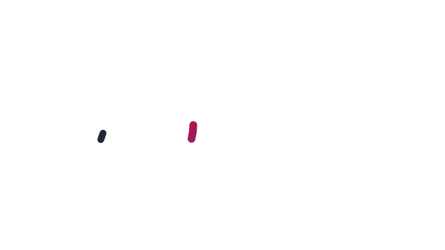
0.3 s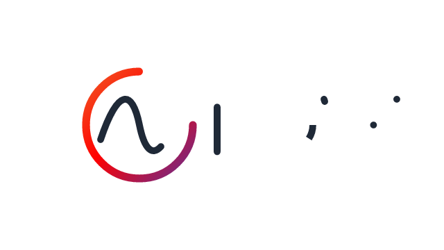
0.9 s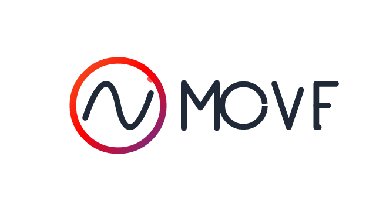
1.5 s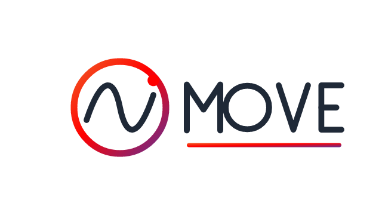
2.6 sA logo drawn on with Trim Paths, staggered letters and a wipe (sample: logo.motionator).
Logo yang tergambar dengan Trim Paths, huruf yang muncul bergantian, dan wipe (contoh: logo.motionator).
What you can makeApa yang bisa dibuat#
Stock footageFootage stok
Seamless 4K backgrounds in H.264 or ProRes, checked for loops and for the usual stock-site rules.
Background 4K yang bisa diulang mulus, dalam H.264 atau ProRes, dicek loop-nya dan syarat umum situs stok.
Logo animationAnimasi logo
Draw-on strokes, pops, wipes and colour flashes, with a soundtrack.
Garis yang tergambar, pop, wipe, dan kilasan warna, lengkap dengan audio.
Web animationAnimasi web
Lottie JSON for lottie-web and apps, or one self-contained animated SVG.
Lottie JSON untuk lottie-web dan aplikasi, atau satu file SVG animasi yang berdiri sendiri.
Your own presetsPreset sendiri
Turn any keyframed layer into a preset and reuse it in every project.
Jadikan layer berkeyframe mana pun sebagai preset dan pakai ulang di semua proyek.
How Motionator worksCara kerja Motionator#
You prepare artwork in Illustrator, Inkscape, Figma or any vector editor and save it as SVG. Every group or path with a name (an id in the SVG) becomes a layer you can animate. You then animate layers in two ways, which can be combined:
Siapkan artwork di Illustrator, Inkscape, Figma, atau editor vektor lain lalu simpan sebagai SVG. Setiap grup atau path yang punya nama (id di SVG) menjadi layer yang bisa dianimasikan. Layer bisa dianimasikan dengan dua cara, dan keduanya bisa digabung:
- Presets: ready-made motions (Fade In, Bounce, Orbit, Draw On…) applied with a double-click. Ideal for fast, consistent results.
- Preset: gerakan siap pakai (Fade In, Bounce, Orbit, Draw On, dan lainnya) yang diterapkan dengan klik dua kali. Cocok untuk hasil cepat dan konsisten.
- Keyframes: set values at points in time, with easing, a graph editor and curved motion paths, like in After Effects.
- Keyframe: tentukan nilai di titik waktu tertentu, dengan easing, graph editor, dan motion path melengkung, seperti di After Effects.
The same renderer draws the preview and the exported video, so what you see is what you get. Lottie and animated SVG exports are checked against this renderer and each export shows a compatibility report before saving.
Renderer yang sama dipakai untuk preview dan video hasil ekspor, jadi yang Anda lihat itulah hasilnya. Ekspor Lottie dan SVG animasi diuji terhadap renderer ini, dan setiap ekspor menampilkan laporan kompatibilitas sebelum disimpan.
01InstallationInstalasi#
Install once, then open SVG files or projects straight from Explorer.
Pasang sekali, lalu buka file SVG atau proyek langsung dari Explorer.
RequirementsKebutuhan sistem#
| ItemItem | RequirementKebutuhan |
|---|---|
| SystemSistem | Windows 10 or 11, 64-bitWindows 10 atau 11, 64-bit |
| MemoryMemori | 8 GB RAM; 16 GB recommended for 4K export with motion blurRAM 8 GB; 16 GB disarankan untuk ekspor 4K dengan motion blur |
| DisplayLayar | 1600×900 or larger1600×900 atau lebih besar |
| WebView2 | Included in Windows 11; the installer adds it on Windows 10 if missingSudah ada di Windows 11; installer memasangnya di Windows 10 bila belum ada |
| FFmpeg | Bundled with the installer (used for video and audio export)Disertakan dalam installer (dipakai untuk ekspor video dan audio) |
InstallingMemasang#
- Run
Motionator_0.1.0_x64-setup.exe. Choose English or Bahasa Indonesia for the installer.JalankanMotionator_0.1.0_x64-setup.exe. Pilih English atau Bahasa Indonesia untuk installer. - Follow the pages and click Install. Motionator installs for your user account only, so no administrator rights are needed.Ikuti halamannya lalu klik Install. Motionator dipasang untuk akun Anda saja, jadi tidak perlu hak administrator.
- Optionally create a desktop shortcut, then start Motionator from the last page or the Start menu.Bila perlu buat pintasan desktop, lalu jalankan Motionator dari halaman terakhir atau menu Start.
The installer registers .motionator project files: double-clicking one in Explorer opens it in Motionator. You can also right-click an .svg file and choose Open with ▸ Motionator to import it straight away.
Installer mendaftarkan file proyek .motionator: klik dua kali file itu di Explorer untuk membukanya di Motionator. Anda juga bisa klik kanan file .svg lalu pilih Open with ▸ Motionator untuk langsung mengimpornya.
First launch and languagePertama kali dibuka dan bahasa#
Motionator follows the Windows display language: Indonesian on an Indonesian Windows, English otherwise. Change it any time in Edit ▸ Preferences (Bahasa / Language); the whole interface switches at once, including preset descriptions and export reports.
Motionator mengikuti bahasa tampilan Windows: Indonesia bila Windows berbahasa Indonesia, selain itu Inggris. Ganti kapan saja di Edit ▸ Preferensi (Bahasa / Language); seluruh antarmuka langsung berganti, termasuk deskripsi preset dan laporan ekspor.
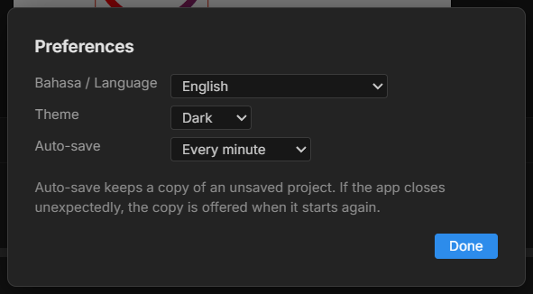
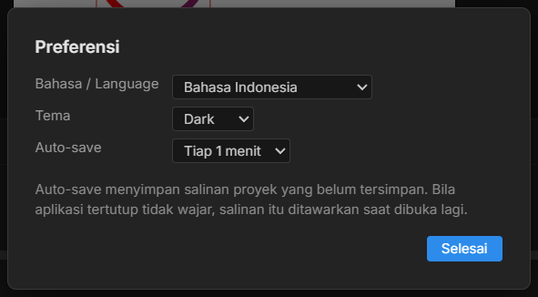
The status bar shows FFmpeg with a check mark when video export is ready. If it shows a warning, reinstall Motionator; video export needs FFmpeg, everything else works without it.
Status bar menampilkan FFmpeg dengan tanda centang bila ekspor video siap. Bila muncul peringatan, pasang ulang Motionator; ekspor video butuh FFmpeg, fitur lain tetap jalan tanpanya.
02Quick start: your first animationMulai cepat: animasi pertama#
Five minutes from an SVG to a finished MP4.
Lima menit dari SVG sampai MP4 jadi.
- Import an SVG. Press Ctrl+I, choose File ▸ Import SVG…, or simply drag an
.svgfile onto the window. Trysamples/logo.svg.Impor SVG. Tekan Ctrl+I, pilih File ▸ Impor SVG…, atau seret file.svgke jendela. Cobasamples/logo.svg. - Select a layer. Click it in the Layers panel or directly on the canvas with the Selection tool V.Pilih layer. Klik di panel Layers atau langsung di canvas dengan Selection tool V.
- Apply a preset. In the Presets panel, hover a preset to preview it, then double-click it. Enter presets start at the playhead (the blue line in the timeline).Terapkan preset. Di panel Presets, arahkan kursor ke preset untuk melihat preview-nya, lalu klik dua kali. Preset Enter dimulai di playhead (garis biru di timeline).
- Play it. Press Space or the round play button under the canvas. The green bar on the ruler shows frames already cached for smooth playback.Putar. Tekan Space atau tombol play bulat di bawah canvas. Bar hijau di ruler menunjukkan frame yang sudah di-cache agar pemutaran mulus.
- Adjust timing. In the Timeline, drag a preset bar to move it and drag its right edge to change its duration.Atur waktu. Di Timeline, seret bar preset untuk memindahkannya dan seret tepi kanannya untuk mengubah durasi.
- Export. Click the red Export button (or Ctrl+M), choose a format and size in the Render Queue, pick the output file, then press Render.Ekspor. Klik tombol merah Export (atau Ctrl+M), pilih format dan ukuran di Render Queue, tentukan file tujuan, lalu tekan Render.
- Save the project with Ctrl+S. The
.motionatorfile contains your SVG, so it can be moved and shared as one file.Simpan proyek dengan Ctrl+S. File.motionatorsudah berisi SVG Anda, jadi bisa dipindah dan dibagikan sebagai satu file.
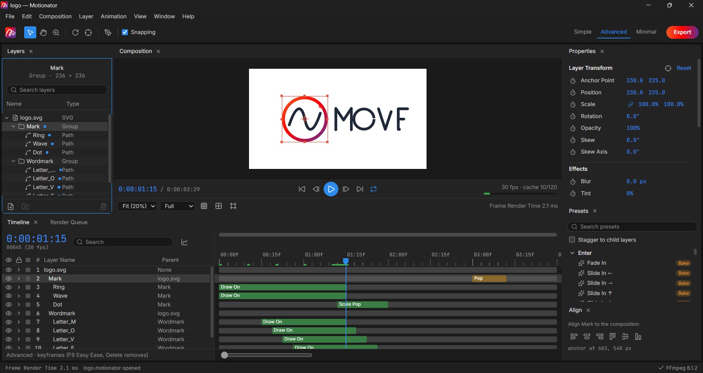
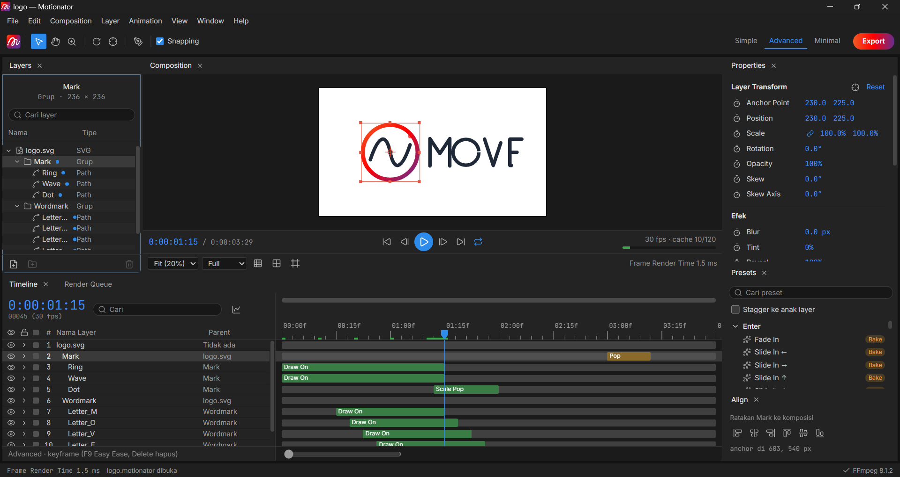
Everything you do can be undone with Ctrl+Z and redone with Ctrl+Shift+Z. A whole drag is one undo step.
Semua tindakan bisa dibatalkan dengan Ctrl+Z dan diulang dengan Ctrl+Shift+Z. Satu kali seret dihitung satu langkah undo.
03Core conceptsKonsep dasar#
Six ideas that explain how everything in Motionator behaves.
Enam gagasan yang menjelaskan perilaku semua bagian Motionator.
1. The composition1. Komposisi#
A composition is the frame you animate in: a size in pixels, a frame rate, a duration and a background. Everything you export is a render of the composition. A project has one composition; you can import several SVG files into it.
Komposisi adalah bingkai tempat Anda menganimasikan: ukuran dalam piksel, frame rate, durasi, dan background. Semua yang diekspor adalah hasil render komposisi. Satu proyek punya satu komposisi; Anda bisa mengimpor beberapa file SVG ke dalamnya.
| Frame rateFrame rate | Typical usePenggunaan umum |
|---|---|
| 23.976 / 24 fps | Cinematic footage; matches film and most stock clips shot on cameras.Footage sinematik; cocok dengan film dan kebanyakan klip stok dari kamera. |
| 25 / 50 fps | PAL regions (Europe, Indonesia broadcast).Wilayah PAL (Eropa, siaran Indonesia). |
| 29.97 / 30 fps | Web video, social media, NTSC regions. A safe default.Video web, media sosial, wilayah NTSC. Default yang aman. |
| 59.94 / 60 fps | Very smooth motion, UI demos, fast-moving graphics.Gerakan sangat halus, demo UI, grafis yang bergerak cepat. |
Time is shown as a timecode 0:00:02:15 = hours : minutes : seconds : frames, so at 30 fps 0:00:02:15 is 2.5 seconds. Below it the timeline shows the absolute frame number. Internally Motionator counts time in very fine ticks, so changing the frame rate never shifts your animation.
Waktu ditampilkan sebagai timecode 0:00:02:15 = jam : menit : detik : frame, jadi pada 30 fps 0:00:02:15 adalah 2,5 detik. Di bawahnya timeline menampilkan nomor frame absolut. Di dalamnya Motionator menghitung waktu dalam satuan tick yang sangat halus, jadi mengubah frame rate tidak menggeser animasi Anda.
2. Layers and the hierarchy2. Layer dan hierarki#
Layers form a tree that mirrors the groups in your SVG. A child's transform is relative to its parent: if Wordmark moves 100 px right, every letter inside moves with it, and each letter can still have its own animation on top. This is why good grouping in your design tool matters so much: animate a group to move parts together, animate the children for detail.
Layer membentuk pohon yang mencerminkan grup di SVG Anda. Transform anak relatif terhadap induknya: bila Wordmark bergeser 100 px ke kanan, setiap huruf di dalamnya ikut bergeser, dan setiap huruf tetap bisa punya animasinya sendiri di atasnya. Itulah sebabnya pengelompokan yang baik di aplikasi desain sangat penting: animasikan grup untuk menggerakkan bagian-bagian bersama, animasikan anaknya untuk detail.
Opacity multiplies down the tree (a child at 50 % inside a parent at 50 % shows at 25 %). Effects such as Blur, Tint and Reveal apply to the layer and everything inside it.
Opacity dikalikan ke bawah pohon (anak 50 % di dalam induk 50 % tampil 25 %). Efek seperti Blur, Tint, dan Reveal berlaku untuk layer beserta semua isinya.
3. The anchor point3. Anchor point#
Rotation, scale and skew happen around the anchor point (the red crosshair on the canvas). The same 30° rotation looks completely different with the anchor in the centre or on a corner. Position moves the anchor point, so a layer's Position is where its anchor sits in the parent.
Rotasi, skala, dan skew terjadi di sekitar anchor point (tanda silang merah di canvas). Rotasi 30° yang sama terlihat sangat berbeda bila anchor ada di tengah atau di sudut. Position memindah anchor point, jadi Position sebuah layer adalah letak anchor-nya di dalam induk.
- A door or a pendulum (Swing): anchor on the hinge or the top.
- Pintu atau bandul (Swing): anchor di engsel atau di atas.
- A clock hand (Tick, Spin): anchor at the end that stays fixed.
- Jarum jam (Tick, Spin): anchor di ujung yang diam.
- A bouncing ball with squash: anchor at the bottom so it squashes onto the ground.
- Bola memantul dengan squash: anchor di bawah agar memipih ke lantai.
- A logo popping in: anchor in the centre.
- Logo yang muncul membesar: anchor di tengah.
4. Transform order4. Urutan transform#
Every frame, each layer is placed in this order: the shape is offset so its anchor point is at the origin, then scaled, skewed and rotated around it, then moved to Position, and finally put inside its parent. You never have to think about this while working, but it explains why scaling never moves the anchor point and why rotating a parent swings its children around the parent's anchor.
Di setiap frame, setiap layer ditempatkan dengan urutan ini: bentuk digeser agar anchor point-nya di titik asal, lalu diskala, dimiringkan, dan diputar di sekitarnya, lalu dipindah ke Position, dan akhirnya dimasukkan ke induknya. Anda tidak perlu memikirkannya saat bekerja, tetapi ini menjelaskan kenapa skala tidak pernah memindah anchor point dan kenapa memutar induk membuat anaknya berayun di sekitar anchor induk.
5. The rest pose5. Pose diam#
The rest pose is how the layer looks in your SVG file: its original position, size and rotation. Presets are relative to it: Slide In ← always ends exactly at the rest pose, wherever that is. Reset Transform brings a layer back to it, and Save as Preset stores motion as changes from it, which is why your presets work on other layers.
Pose diam adalah tampilan layer di file SVG Anda: posisi, ukuran, dan rotasi aslinya. Preset bersifat relatif terhadapnya: Slide In ← selalu berakhir tepat di pose diam, di mana pun letaknya. Reset Transform mengembalikan layer ke pose ini, dan Simpan sebagai Preset menyimpan gerakan sebagai perubahan dari pose ini, itulah sebabnya preset Anda bisa dipakai di layer lain.
6. How a frame is calculated6. Cara sebuah frame dihitung#
- Start from the rest pose (or the keyframed value, if the property has keyframes).Mulai dari pose diam (atau nilai keyframe, bila properti punya keyframe).
- Enter and Exit presets that are active at this time replace the value; the one that starts last wins.Preset Enter dan Exit yang aktif pada waktu ini menggantikan nilainya; yang mulai paling akhir yang menang.
- Loop and Emphasis presets add their motion on top.Preset Loop dan Emphasis menambahkan gerakannya di atasnya.
- The parent's result is applied, then the layer is drawn with its effects.Hasil induk diterapkan, lalu layer digambar dengan efeknya.
Because of this order you can freely mix methods: keyframe a logo's position across the screen, add Fade In at the start and Float for the whole clip, and all three work together.
Karena urutan ini Anda bebas mencampur cara: beri keyframe pada posisi logo melintasi layar, tambahkan Fade In di awal dan Float sepanjang klip, dan ketiganya bekerja bersama.
Everything is non-destructive: presets are calculated live and never baked into your project unless you choose Bake to Keyframes. Delete a preset and the layer is exactly as before.
Semuanya non-destruktif: preset dihitung langsung dan tidak pernah di-bake ke proyek kecuali Anda memilih Bake ke Keyframe. Hapus preset dan layer kembali persis seperti sebelumnya.
04Preparing SVG filesMenyiapkan file SVG#
Good layer names in your design tool make animation easy.
Nama layer yang baik di aplikasi desain memudahkan animasi.
Named elements become layersElemen bernama menjadi layer#
Motionator makes a layer for every group and path that has an id. Elements without an id stay part of their parent layer, so they move together. Nesting is kept: a named group inside another named group becomes a child layer, and moving the parent moves the child.
Motionator membuat layer untuk setiap grup dan path yang punya id. Elemen tanpa id tetap menjadi bagian layer induknya, jadi ikut bergerak bersama. Susunan bertingkat dipertahankan: grup bernama di dalam grup bernama lain menjadi layer anak, dan memindah induk ikut memindah anaknya.
| ToolAplikasi | How to give elements idsCara memberi id pada elemen |
|---|---|
| Adobe Illustrator | Name layers and sub-layers in the Layers panel. Export with File ▸ Export ▸ Export As… ▸ SVG and Object IDs: Layer Names. Illustrator writes spaces as _x20_; Motionator shows them as spaces again.Beri nama layer dan sub-layer di panel Layers. Ekspor lewat File ▸ Export ▸ Export As… ▸ SVG dengan Object IDs: Layer Names. Illustrator menulis spasi sebagai _x20_; Motionator menampilkannya lagi sebagai spasi. |
| Inkscape | Set the ID in Object Properties (Ctrl+Shift+O), or rename layers. Save as Plain SVG or Inkscape SVG.Isi ID di Object Properties (Ctrl+Shift+O), atau ganti nama layer. Simpan sebagai Plain SVG atau Inkscape SVG. |
| Figma | Layer names become ids when you export a frame as SVG with Include "id" attribute turned on.Nama layer menjadi id saat Anda mengekspor frame sebagai SVG dengan Include "id" attribute aktif. |
| Any editorEditor lain | Add id="Name" to the <g> or <path> elements in a text editor.Tambahkan id="Nama" pada elemen <g> atau <path> lewat editor teks. |
Checklist before importingDaftar periksa sebelum impor#
- Outline text (Create Outlines / Object to Path). Live text is not drawn.
- Ubah teks menjadi outline (Create Outlines / Object to Path). Teks yang masih bisa diedit tidak digambar.
- Use strokes for line art you want to draw on with Trim Paths. Filled shapes cannot be drawn on.
- Pakai stroke untuk line art yang ingin tergambar dengan Trim Paths. Bentuk berisi (fill) tidak bisa tergambar.
- Group what moves together and name the group, e.g. a wheel with its spokes.
- Kelompokkan yang bergerak bersama dan beri nama grupnya, misalnya roda beserta jari-jarinya.
- Avoid filters and raster images if you also need Lottie: they render in video but cannot be exported to Lottie.
- Hindari filter dan gambar raster bila juga butuh Lottie: keduanya tampil di video tetapi tidak bisa diekspor ke Lottie.
- Keep ids unique. Duplicate ids are reported; only the first becomes a layer.
- Pastikan id unik. Id ganda dilaporkan; hanya yang pertama menjadi layer.
Import warningsPeringatan impor#
After an import the status bar shows how many layers were found. If something needs attention, a warning appears there; click it to see the list. Warnings never stop the import.
Setelah impor, status bar menampilkan jumlah layer yang ditemukan. Bila ada yang perlu diperhatikan, peringatan muncul di sana; klik untuk melihat daftarnya. Peringatan tidak pernah menghentikan impor.
| WarningPeringatan | What to doYang perlu dilakukan |
|---|---|
| Text not outlinedTeks belum di-outline | Convert text to outlines and import again.Ubah teks menjadi outline lalu impor ulang. |
| Filters (blur, shadow…)Filter (blur, shadow, dll.) | Fine for video; slows 4K rendering and is left out of Lottie.Aman untuk video; memperlambat render 4K dan tidak ikut ke Lottie. |
| Patterns / blend modesPattern / blend mode | Shown in video; Lottie support is limited.Tampil di video; dukungan Lottie terbatas. |
| Raster imagesGambar raster | Blurry when scaled up; makes Lottie files larger.Kabur bila diperbesar; memperbesar file Lottie. |
| Duplicate idsId ganda | Rename them in your editor so each part can be animated.Ganti namanya di editor supaya setiap bagian bisa dianimasikan. |
| No idsTidak ada id | The whole SVG becomes one layer; name your layers.Seluruh SVG menjadi satu layer; beri nama pada layer-layer Anda. |
A newly imported SVG is centred in the composition at its own size, scaled down only if it is larger than the composition. Each layer's anchor point starts at the centre of its box.
SVG yang baru diimpor diletakkan di tengah komposisi dengan ukuran aslinya, dan hanya diperkecil bila lebih besar dari komposisi. Anchor point setiap layer awalnya ada di tengah kotaknya.
A well-structured SVGSVG yang tersusun baik#
This is the structure of samples/logo.svg. Groups with ids become layers that can move as a unit; paths with ids inside them can be animated on their own. Strokes are used where the line should draw on.
Ini struktur samples/logo.svg. Grup ber-id menjadi layer yang bisa bergerak sebagai satu kesatuan; path ber-id di dalamnya bisa dianimasikan sendiri. Stroke dipakai pada garis yang akan tergambar.
<svg xmlns="http://www.w3.org/2000/svg" viewBox="0 0 600 220">
<g id="Mark"> <!-- layer: the symbol -->
<circle id="Ring" … fill="none" stroke="#e2381d" stroke-width="14"/>
<path id="Wave" … fill="none" stroke="#7c3aed" stroke-width="12"/>
<circle id="Dot" … fill="#111827"/>
</g>
<g id="Wordmark"> <!-- layer: the name -->
<path id="Letter_M" …/> <path id="Letter_O" …/>
<path id="Letter_V" …/> <path id="Letter_E" …/>
</g>
<path id="Underline" … stroke="#e2381d"/>
</svg>Step by step: Adobe IllustratorLangkah demi langkah: Adobe Illustrator#
- Put each part you want to animate on its own layer or sub-layer, and name it in the Layers panel (double-click the name).Taruh setiap bagian yang ingin dianimasikan di layer atau sub-layer sendiri, dan beri nama di panel Layers (klik dua kali namanya).
- Select text and choose Type ▸ Create Outlines Ctrl+Shift+O. Keep a copy of the editable file.Pilih teks lalu Type ▸ Create Outlines Ctrl+Shift+O. Simpan salinan file yang masih bisa diedit.
- Expand appearances and brushes you want as plain shapes (Object ▸ Expand Appearance), but keep strokes as strokes for Trim Paths.Expand appearance dan brush yang ingin dijadikan bentuk biasa (Object ▸ Expand Appearance), tetapi biarkan stroke tetap stroke untuk Trim Paths.
- Set the artboard to the area of the artwork (Object ▸ Artboards ▸ Fit to Artwork Bounds).Atur artboard sesuai area artwork (Object ▸ Artboards ▸ Fit to Artwork Bounds).
- File ▸ Export ▸ Export As…, format SVG, tick Use Artboards. In the options: Styling Presentation Attributes, Font Convert to Outlines, Images Embed, Object IDs Layer Names, Decimal 2, untick Minify.File ▸ Export ▸ Export As…, format SVG, centang Use Artboards. Di opsinya: Styling Presentation Attributes, Font Convert to Outlines, Images Embed, Object IDs Layer Names, Decimal 2, jangan centang Minify.
Step by step: FigmaLangkah demi langkah: Figma#
- Build the artwork inside a frame. Name layers and groups in the layers list.Buat artwork di dalam frame. Beri nama layer dan grup di daftar layer.
- Select text and use Outline stroke/Flatten only where needed; Figma exports text as paths when Outline text is on.Pilih teks dan pakai Outline stroke/Flatten hanya bila perlu; Figma mengekspor teks sebagai path bila Outline text aktif.
- Select the frame, add an export setting SVG, open its options and tick Include "id" attribute and Outline text.Pilih frame, tambahkan export setting SVG, buka opsinya lalu centang Include "id" attribute dan Outline text.
- Export. Auto-layout frames become plain groups, which is fine.Ekspor. Frame auto-layout menjadi grup biasa, dan itu tidak masalah.
Step by step: InkscapeLangkah demi langkah: Inkscape#
- Group parts with Ctrl+G and set each group's ID in Object ▸ Object Properties, then click Set.Kelompokkan bagian dengan Ctrl+G dan isi ID tiap grup di Object ▸ Object Properties, lalu klik Set.
- Convert text with Path ▸ Object to Path Shift+Ctrl+C.Ubah teks dengan Path ▸ Object to Path Shift+Ctrl+C.
- Document Properties ▸ Resize to content, then Save As ▸ Plain SVG.Document Properties ▸ Resize to content, lalu Save As ▸ Plain SVG.
Size and resolutionUkuran dan resolusi#
SVG is resolution-independent: a 600 px wide logo renders razor-sharp in a 4K composition, because every frame is drawn from the vectors. The viewBox of the file only sets the starting size. Scale the SVG root layer up in Motionator rather than exporting a bigger SVG.
SVG tidak bergantung resolusi: logo selebar 600 px tetap tajam di komposisi 4K, karena setiap frame digambar dari vektornya. viewBox file hanya menentukan ukuran awal. Perbesar layer root SVG di Motionator daripada mengekspor SVG yang lebih besar.
Very complex files (tens of thousands of paths, heavy blur filters, large embedded photos) render slowly at 4K. Simplify paths (Illustrator: Object ▸ Path ▸ Simplify) and avoid unnecessary filters.
File yang sangat rumit (puluhan ribu path, filter blur berat, foto besar yang di-embed) dirender lambat di 4K. Sederhanakan path (Illustrator: Object ▸ Path ▸ Simplify) dan hindari filter yang tidak perlu.
05The workspace at a glanceSekilas ruang kerja#
An After Effects–style layout: panels around a central canvas.
Tata letak gaya After Effects: panel-panel di sekeliling canvas utama.
- 1Menu bar: every command, with its shortcut.Menu bar: semua perintah, lengkap dengan shortcut.
- 2Toolbar: Selection, Hand, Zoom, Rotation, Anchor Point and Pen tools, and Snapping.Toolbar: tool Selection, Hand, Zoom, Rotation, Anchor Point, Pen, dan Snapping.
- 3Workspaces: Simple, Advanced and Minimal.Workspace: Simple, Advanced, dan Minimal.
- 4Export: adds the composition to the Render Queue.Export: menambahkan komposisi ke Render Queue.
- 5Layers: the layer tree of your SVGs.Layers: pohon layer dari SVG Anda.
- 6Composition: the canvas, where you select and move layers.Composition: canvas, tempat memilih dan memindah layer.
- 7Transport: play, step, loop, current time and cache.Transport: putar, maju/mundur per frame, loop, waktu saat ini, dan cache.
- 8Properties: transform, effects, Trim Paths and presets of the selected layer.Properties: transform, efek, Trim Paths, dan preset dari layer terpilih.
- 9Timeline: preset bars, keyframes and the Graph Editor; the Render Queue is its neighbour tab.Timeline: bar preset, keyframe, dan Graph Editor; Render Queue ada di tab sebelahnya.
- 10Presets: the preset library with search and live previews.Presets: pustaka preset dengan pencarian dan preview langsung.
- 11Align: align the selected layer to the composition.Align: ratakan layer terpilih terhadap komposisi.
- 12Status bar: messages, import warnings and the FFmpeg check.Status bar: pesan, peringatan impor, dan cek FFmpeg.
MenusMenu#
The menus list every command with its keyboard shortcut. The File menu holds projects, imports and the web exports; Animation holds preset and keyframe commands; Window shows and arranges panels.
Menu berisi semua perintah beserta shortcut-nya. Menu File berisi proyek, impor, dan ekspor web; Animation berisi perintah preset dan keyframe; Window menampilkan dan menata panel.
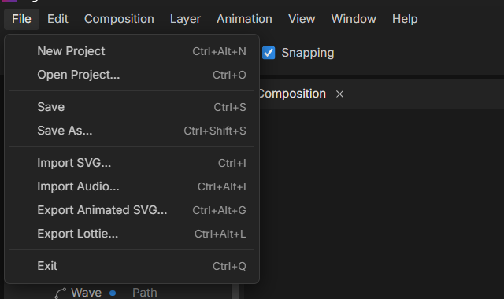
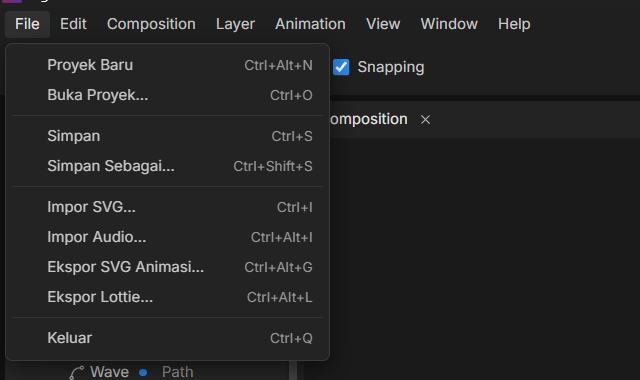
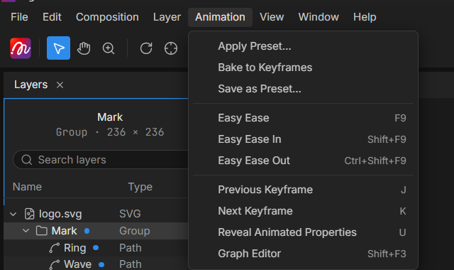
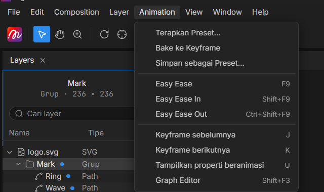
Toolbar and toolsToolbar dan tool#
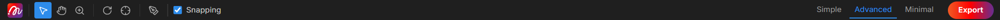

| ToolTool | KeyTombol | UseKegunaan |
|---|---|---|
| Selection | V | Click a layer on the canvas to select it; drag to move it. Hold Shift to move only horizontally or vertically.Klik layer di canvas untuk memilihnya; seret untuk memindahkannya. Tahan Shift agar hanya bergerak horizontal atau vertikal. |
| Hand | H | Drag to pan the canvas. Holding Space gives the Hand tool temporarily.Seret untuk menggeser tampilan canvas. Menahan Space memberi tool Hand sementara. |
| Zoom | Z | Click to zoom in at that point; Alt-click zooms out.Klik untuk memperbesar di titik itu; Alt+klik untuk memperkecil. |
| Rotation | W | Drag around the selected layer to rotate it about its anchor point; Shift snaps to 45°.Seret di sekitar layer terpilih untuk memutarnya pada anchor point; Shift mengunci ke 45°. |
| Anchor Point | Y | Drag to move the anchor point (the pivot for rotation and scale) without moving the layer.Seret untuk memindah anchor point (poros rotasi dan skala) tanpa memindah layer. |
| Pen | G | Shows the motion path; click a position keyframe to switch it between a smooth curve and a sharp corner.Menampilkan motion path; klik keyframe posisi untuk mengubahnya antara kurva halus dan sudut tajam. |
With the mouse wheel over the canvas: scroll pans, Shift+scroll pans sideways, and Ctrl+scroll or Alt+scroll zooms around the pointer.
Dengan roda mouse di atas canvas: scroll menggeser tampilan, Shift+scroll menggeser ke samping, dan Ctrl+scroll atau Alt+scroll memperbesar di sekitar kursor.
07Workspaces and docking panelsWorkspace dan panel docking#
Arrange panels the way you work, and keep several layouts.
Tata panel sesuai cara kerja Anda, dan simpan beberapa tata letak.
Simple, Advanced and MinimalSimple, Advanced, dan Minimal#
| WorkspaceWorkspace | KeyTombol | ForUntuk |
|---|---|---|
| Simple | Shift+F10 | Working with presets: the timeline shows one row per layer with preset bars.Bekerja dengan preset: timeline menampilkan satu baris per layer dengan bar preset. |
| Advanced | Shift+F11 | Keyframes: layers twirl open to show every property, keyframes and the Graph Editor.Keyframe: layer bisa dibuka untuk menampilkan semua properti, keyframe, dan Graph Editor. |
| Minimal | Shift+F12 | Reviewing: just the canvas and the timeline.Meninjau: hanya canvas dan timeline. |
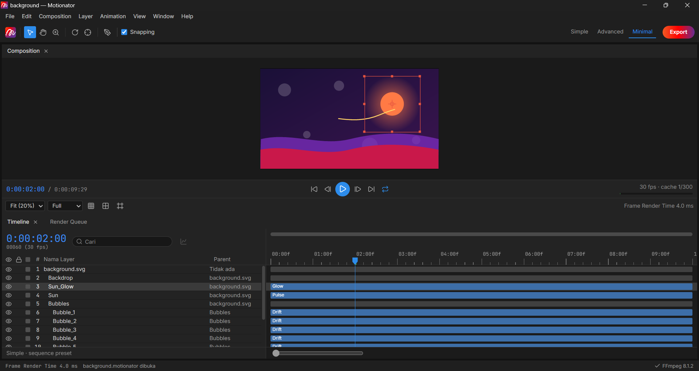
Moving panelsMemindah panel#
Drag a panel by its tab. A blue overlay shows where it will land: the outer quarter of a panel group docks it on that side, the middle adds it as a tab. Release to drop it there, or press Esc to cancel. Drag the gaps between panels to resize them.
Seret panel lewat tab-nya. Overlay biru menunjukkan tempat panel akan diletakkan: seperempat bagian tepi suatu grup panel menempelkannya di sisi itu, bagian tengah menambahkannya sebagai tab. Lepas untuk meletakkannya, atau tekan Esc untuk batal. Seret celah antar panel untuk mengubah ukurannya.
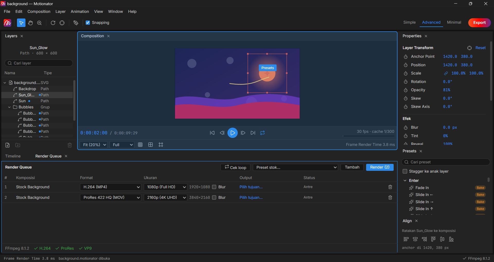
Close a panel with the × on its tab and bring it back from the Window menu. Each workspace remembers its own arrangement. Window ▸ Reset Layout restores the default, and Window ▸ Saved Layouts… keeps arrangements under a name.
Tutup panel dengan × di tab-nya dan buka lagi dari menu Window. Setiap workspace mengingat susunannya sendiri. Window ▸ Reset Tata Letak mengembalikan susunan default, dan Window ▸ Tata Letak Tersimpan… menyimpan susunan dengan nama.
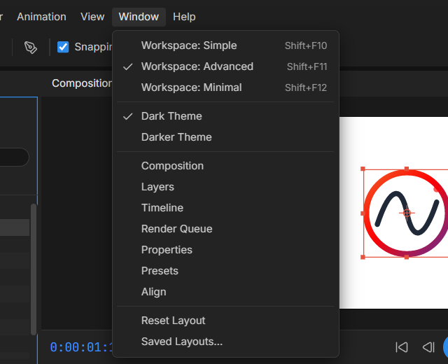
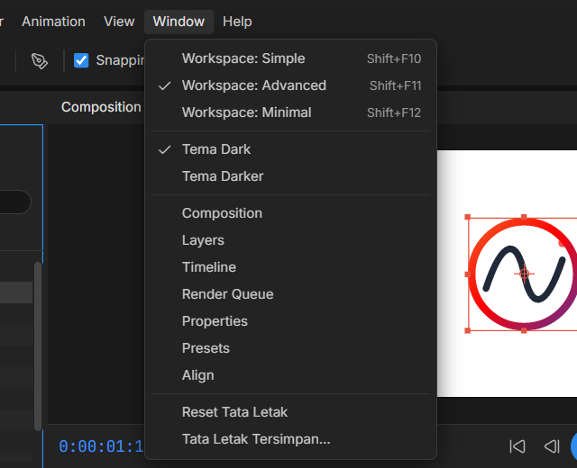
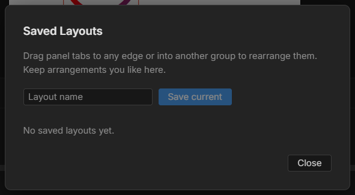
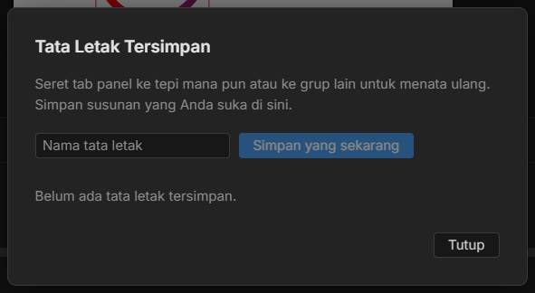
Themes: Window ▸ Dark Theme or Darker Theme. The choice is remembered.
Tema: Window ▸ Tema Dark atau Tema Darker. Pilihan Anda diingat.
08Layers panelPanel Layers#
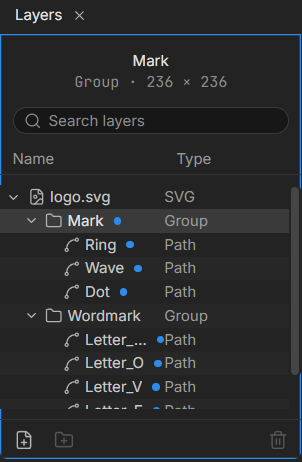
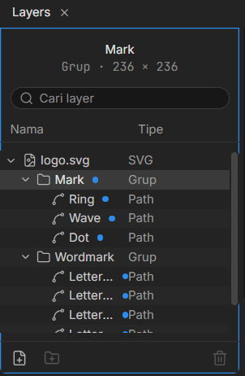
- Header: the selected layer's name, kind, size and SVG id.
- Header: nama, jenis, ukuran, dan id SVG dari layer terpilih.
- Search: type to filter layers by name.
- Cari: ketik untuk menyaring layer berdasarkan nama.
- Kinds: SVG is the imported file (the root layer), Group and Path are named elements inside it. Arrows fold groups.
- Jenis: SVG adalah file yang diimpor (layer root), Grup dan Path adalah elemen bernama di dalamnya. Panah melipat grup.
- Blue dot: the layer has presets or keyframes.
- Titik biru: layer punya preset atau keyframe.
- Buttons: import another SVG, and delete the selected SVG (only whole SVG files can be deleted; their parts belong to the file).
- Tombol: impor SVG lain, dan hapus SVG terpilih (hanya file SVG utuh yang bisa dihapus; bagian di dalamnya milik file itu).
A composition can hold several SVG files; each becomes its own root layer. Later imports appear on top.
Satu komposisi bisa berisi beberapa file SVG; masing-masing menjadi layer root sendiri. Impor terakhir tampil paling atas.
09Composition panelPanel Composition#
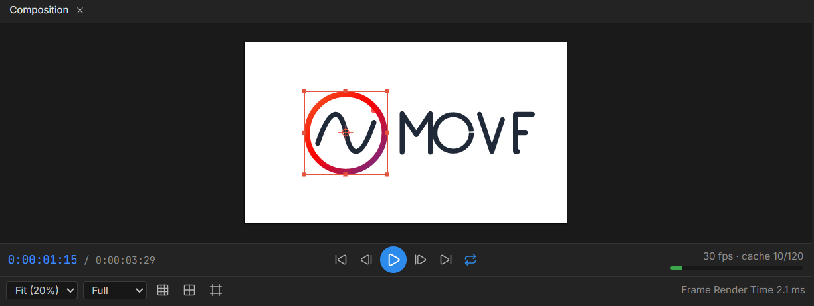
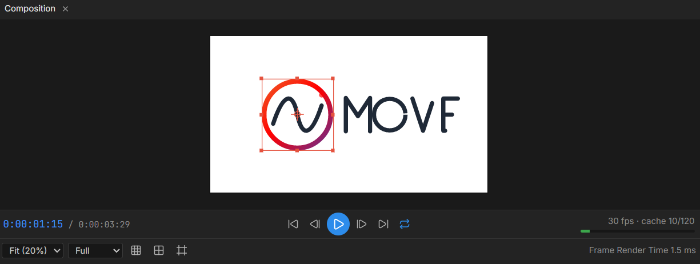
CanvasCanvas#
The composition is the white (or chequered, when transparent) rectangle; the dark area around it is the pasteboard. The selected layer shows a red box that follows its rotation, eight handles and its anchor point. Hovering a layer outlines it in blue.
Komposisi adalah persegi putih (atau kotak-kotak bila transparan); area gelap di sekitarnya adalah pasteboard. Layer terpilih menampilkan kotak merah yang ikut berputar, delapan handle, dan anchor point-nya. Mengarahkan kursor ke layer memberinya garis biru.
Playback controlsKontrol pemutaran#
| ControlKontrol | KeyTombol | ActionFungsi |
|---|---|---|
| Current time / durationWaktu saat ini / durasi | Timecode in hours:minutes:seconds:frames.Timecode dalam jam:menit:detik:frame. | |
| Go to start / endKe awal / akhir | Home End | |
| Previous / next frameFrame sebelumnya / berikutnya | Page Up Page Down | Also the arrow keys; with Shift they move 10 frames.Juga tombol panah; dengan Shift bergerak 10 frame. |
| Play / PausePutar / Jeda | Space | Plays in real time with sound (if the project has audio).Memutar secara real time dengan suara (bila proyek punya audio). |
| LoopLoop | Repeat playback from the start.Ulangi pemutaran dari awal. | |
| CacheCache | How many frames are ready; cached frames play smoothly.Jumlah frame yang siap; frame yang sudah di-cache diputar dengan mulus. |
Viewer optionsOpsi tampilan#
- Zoom: Fit, or a fixed percentage. Keys: . zoom in, , zoom out, / 100 %, Shift+/ fit.
- Zoom: Fit, atau persentase tetap. Tombol: . perbesar, , perkecil, / 100 %, Shift+/ sesuaikan.
- Resolution: Full, Half, Third, Quarter. Lower resolutions preview faster on large compositions.
- Resolusi: Full, Half, Third, Quarter. Resolusi rendah mempercepat preview pada komposisi besar.
- Grid Ctrl+', transparency grid and safe areas (action and title safe).
- Grid Ctrl+', grid transparansi, dan safe area (action dan title safe).
- Frame Render Time: how long the last frame took to draw.
- Frame Render Time: berapa lama frame terakhir digambar.
10Properties panelPanel Properties#
Exact values for the selected layer, or the composition settings when nothing is selected.
Nilai pasti untuk layer terpilih, atau pengaturan komposisi bila tidak ada yang dipilih.
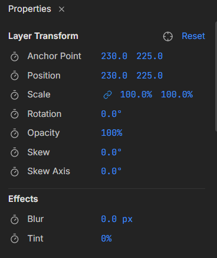
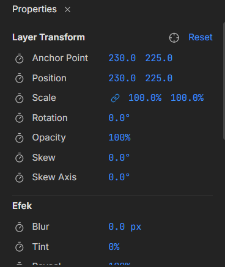
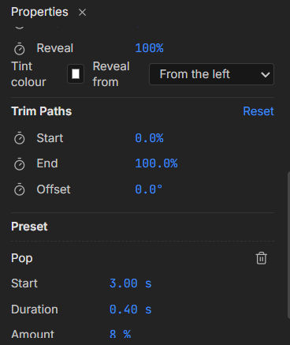
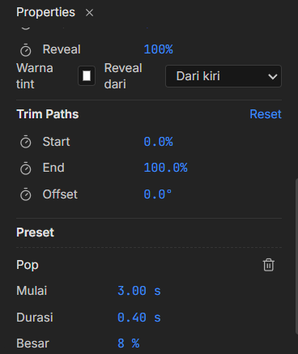
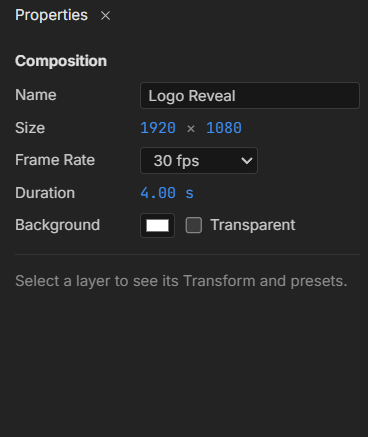
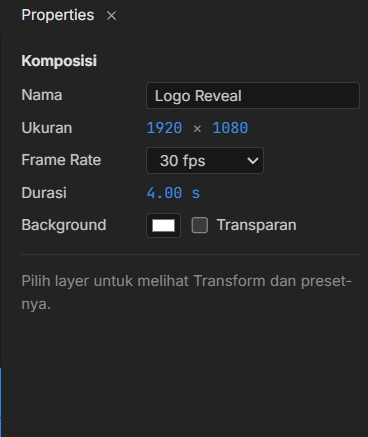
Editing valuesMengubah nilai#
Blue numbers can be dragged left and right to scrub the value, or clicked to type a number (press Enter to confirm, Esc to cancel). The clock icon is the stopwatch: turn it on to animate the property with keyframes (see Keyframes).
Angka biru bisa diseret ke kiri dan kanan untuk mengubah nilai, atau diklik untuk mengetik angka (tekan Enter untuk konfirmasi, Esc untuk batal). Ikon jam adalah stopwatch: nyalakan untuk menganimasikan properti dengan keyframe (lihat Keyframe).
Layer TransformLayer Transform#
| PropertyProperti | MeaningArti |
|---|---|
| Anchor Point | The pivot for rotation, scale and skew, in the parent's coordinates. The crosshair button centres it on the layer.Poros untuk rotasi, skala, dan skew, dalam koordinat induk. Tombol tanda silang menaruhnya di tengah layer. |
| Position | Where the anchor point sits (x, y).Letak anchor point (x, y). |
| Scale | Width and height in percent. The chain button keeps the proportions.Lebar dan tinggi dalam persen. Tombol rantai menjaga proporsi. |
| Rotation | Degrees, clockwise.Derajat, searah jarum jam. |
| Opacity | 0–100 %.0–100 %. |
| Skew / Skew Axis | Slants the layer along an axis (degrees), like in After Effects.Memiringkan layer di sepanjang sumbu tertentu (derajat), seperti di After Effects. |
Reset returns the transform to the rest pose of the SVG (effects are kept). Layer ▸ Center Anchor Point Ctrl+Alt+Home and Layer ▸ Reset Transform do the same from the menu.
Reset mengembalikan transform ke pose diam SVG (efek tetap). Layer ▸ Pusatkan Anchor Point Ctrl+Alt+Home dan Layer ▸ Reset Transform melakukan hal yang sama dari menu.
EffectsEfek#
| EffectEfek | MeaningArti |
|---|---|
| Blur | Gaussian blur radius in the layer's own pixels (it grows with the layer's scale).Radius gaussian blur dalam piksel layer itu sendiri (ikut membesar dengan skala layer). |
| Tint | How much of the tint colour replaces the layer's colours (0–100 %). Pick the colour with Tint colour.Seberapa banyak warna tint menggantikan warna layer (0–100 %). Pilih warnanya di Warna tint. |
| Reveal | The visible part of the layer's box (100 % = all), wiping in from the side chosen in Reveal from: left, right, top, bottom, iris (circle) or centre.Bagian kotak layer yang terlihat (100 % = semua), tersapu dari sisi yang dipilih di Reveal dari: kiri, kanan, atas, bawah, iris (lingkaran), atau tengah. |
Composition settingsPengaturan komposisi#
Click an empty part of the canvas (or press Ctrl+K) to edit the composition: name, size in pixels, frame rate (23.976 to 60 fps), duration in seconds and the background colour. Tick Transparent for a transparent background, needed for ProRes 4444 or VP9 with alpha.
Klik bagian kosong canvas (atau tekan Ctrl+K) untuk mengubah komposisi: nama, ukuran dalam piksel, frame rate (23,976 sampai 60 fps), durasi dalam detik, dan warna background. Centang Transparan untuk background transparan, yang dibutuhkan ProRes 4444 atau VP9 dengan alpha.
Align panelPanel Align#
The six buttons align the selected layer's box to the left, centre or right and to the top, middle or bottom of the composition. If Position is keyframed, the change is keyed at the playhead.
Keenam tombol meratakan kotak layer terpilih ke kiri, tengah, atau kanan, dan ke atas, tengah, atau bawah komposisi. Bila Position berkeyframe, perubahan dicatat sebagai keyframe di playhead.
11PresetsPreset#
82 ready-made motions in four categories, applied with a double-click.
82 gerakan siap pakai dalam empat kategori, diterapkan dengan klik dua kali.
The four categoriesEmpat kategori#
| CategoryKategori | What it doesFungsinya | Where it is placedPosisinya di timeline |
|---|---|---|
| Enter | Brings the layer in: it ends in the layer's rest pose.Memunculkan layer: berakhir di pose diam layer. | Starts at the playhead.Mulai di playhead. |
| Exit | Takes the layer out: it starts from the rest pose.Menghilangkan layer: mulai dari pose diam. | Ends at the end of the composition.Berakhir di akhir komposisi. |
| Loop | Repeats for as long as the bar lasts and loops seamlessly.Berulang selama bar berlangsung dan bisa di-loop mulus. | Covers the whole composition.Menutupi seluruh komposisi. |
| Emphasis | A short accent that returns to where it started.Aksen singkat yang kembali ke posisi awal. | Starts at the playhead.Mulai di playhead. |
Applying a presetMenerapkan preset#
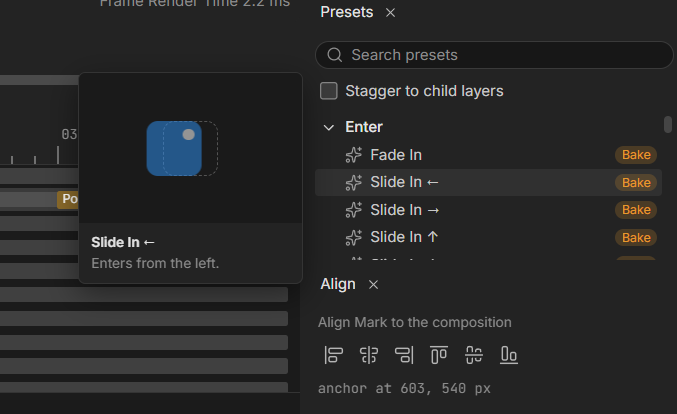
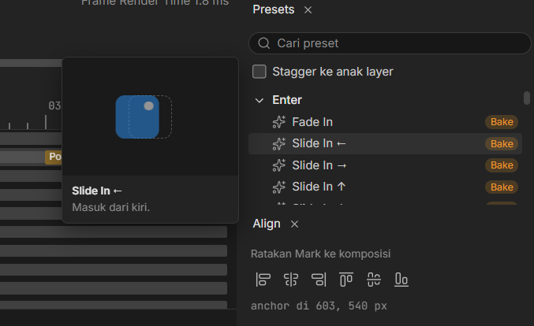
- Select a layer (in the Layers panel, the timeline or on the canvas).Pilih layer (di panel Layers, timeline, atau canvas).
- For Enter and Emphasis presets, move the playhead to where the motion should start.Untuk preset Enter dan Emphasis, pindahkan playhead ke titik mulai gerakan.
- Find the preset: type in Search presets or open a category. Hover to preview.Cari preset: ketik di Cari preset atau buka kategori. Arahkan kursor untuk preview.
- Double-click the preset. It appears as a bar in the timeline and in the Preset section of the Properties panel.Klik dua kali preset. Preset tampil sebagai bar di timeline dan di bagian Preset panel Properties.
A layer can have any number of presets. Select a bar in the timeline to edit its Start, Duration and parameters (distance, amount, period, direction…) in the Properties panel, or delete it with the trash icon or Delete.
Satu layer bisa punya preset sebanyak apa pun. Pilih bar di timeline untuk mengubah Mulai, Durasi, dan parameternya (jarak, besar, periode, arah, dan lainnya) di panel Properties, atau hapus dengan ikon tempat sampah atau Delete.
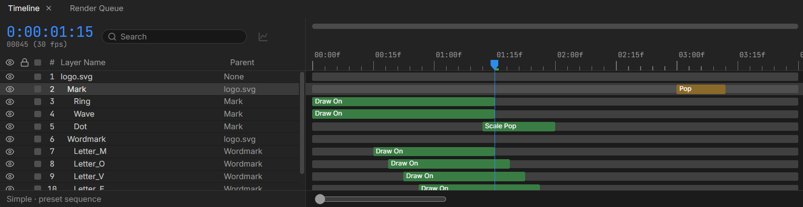
Stagger: animate children one after anotherStagger: animasikan anak layer bergantian#
Tick Stagger to child layers at the top of the Presets panel, select a group and double-click a preset. Instead of the group, each child layer gets the preset, each starting a little later. Set the delay between them (seconds) and the order:
Centang Stagger ke anak layer di atas panel Presets, pilih grup lalu klik dua kali preset. Bukan grupnya, melainkan setiap anak layer yang mendapat preset, masing-masing mulai sedikit lebih lambat. Atur jeda antarlayer (detik) dan urutannya:
The letters of the logo sample use stagger: Draw On on the group Wordmark with 0.125 s between letters. Random order is seeded, so it is the same on every render.
Huruf-huruf pada contoh logo memakai stagger: Draw On pada grup Wordmark dengan jeda 0,125 s antarhuruf. Urutan acak memakai seed, jadi hasilnya sama di setiap render.
Combining presetsMenggabungkan preset#
- Enter and Exit presets override: where two of them change the same property at the same time, the one that starts later wins.
- Preset Enter dan Exit bersifat menimpa: bila dua preset mengubah properti yang sama pada waktu yang sama, yang mulai belakangan yang menang.
- Loop and Emphasis presets are added on top of everything else, so a layer can float while it slides in.
- Preset Loop dan Emphasis ditambahkan di atas yang lain, jadi layer bisa melayang sambil masuk.
- Keyframes are the base: presets work relative to the keyframed value.
- Keyframe adalah dasarnya: preset bekerja relatif terhadap nilai keyframe.
- Presets that rotate or scale (Swing, Spin, Pop…) turn around the anchor point; move it first if the pivot matters.
- Preset yang memutar atau menskala (Swing, Spin, Pop, dan lainnya) berporos pada anchor point; pindahkan dulu bila porosnya penting.
Bake to KeyframesBake ke Keyframe#
Animation ▸ Bake to Keyframes turns the presets of the selected layer into ordinary keyframes, so you can fine-tune them in the Graph Editor. The badge next to each preset (Bake) means it is exported to Lottie in this baked form.
Animation ▸ Bake ke Keyframe mengubah preset pada layer terpilih menjadi keyframe biasa, supaya bisa disetel halus di Graph Editor. Label di samping setiap preset (Bake) berarti preset itu diekspor ke Lottie dalam bentuk bake ini.
All presetsDaftar semua preset#
| CategoryKategori | PresetPreset | DescriptionDeskripsi |
|---|---|---|
| Enter | Fade In | Fades in from transparent.Muncul dari transparan. |
| Enter | Slide In ← | Enters from the left.Masuk dari kiri. |
| Enter | Slide In → | Enters from the right.Masuk dari kanan. |
| Enter | Slide In ↑ | Rises from below.Naik dari bawah. |
| Enter | Slide In ↓ | Comes down from above.Turun dari atas. |
| Enter | Scale Pop | Grows from zero with a slight overshoot.Membesar dari nol dengan sedikit pantulan. |
| Enter | Rotate In | Rotates in while fading in.Berputar masuk sambil muncul. |
| Enter | Bounce In | Drops from above and bounces.Jatuh dari atas lalu memantul. |
| Enter | Elastic Pop | Grows with an elastic wobble.Membesar dengan goyangan elastis. |
| Enter | Drop | Falls from above, accelerating.Jatuh dari atas dengan percepatan. |
| Enter | Zoom In | Comes in large and shrinks to size.Datang dari besar lalu mengecil ke ukurannya. |
| Enter | Fly In | Flies in diagonally.Terbang masuk secara diagonal. |
| Enter | Spiral In | Spins while growing from zero.Berputar sambil membesar dari nol. |
| Enter | Roll In | Rolls in from the left.Menggelinding masuk dari kiri. |
| Enter | Flip In X | Flips in around the vertical axis (3D look).Membalik masuk pada sumbu horizontal (kesan 3D). |
| Enter | Flip In Y | Flips in around the horizontal axis (3D look).Membalik masuk pada sumbu vertikal (kesan 3D). |
| Enter | Pop Up | Pops up with a slight overshoot.Melompat naik dengan sedikit pantulan. |
| Enter | Swing In | Swings in and settles (put the anchor on the hinge).Berayun masuk lalu tenang (taruh anchor di titik engsel). |
| Enter | Stretch In | Comes in stretched and springs into shape.Masuk memanjang lalu memantul ke bentuknya. |
| Enter | Draw On | Strokes draw on from the start of each path to its end (needs a stroke).Garis tergambar dari awal sampai akhir path (butuh stroke). |
| Enter | Draw From Centre | Strokes draw out from the middle of each path to both ends (needs a stroke).Garis tergambar dari tengah path ke kedua ujung (butuh stroke). |
| Enter | Blur In | Comes into focus from a blur.Muncul dari kabur menjadi tajam. |
| Enter | Shear In | Slides in slanted, then straightens.Meluncur masuk miring lalu tegak. |
| Enter | Wipe In | Wipes on from one side.Tersapu masuk dari satu sisi. |
| Enter | Iris In | Opens from a small circle in the middle.Terbuka dari lingkaran kecil di tengah. |
| Enter | Split Reveal | Opens from the centre line out to both sides.Terbuka dari garis tengah ke kedua sisi. |
| Exit | Fade Out | Fades out to transparent.Menghilang menjadi transparan. |
| Exit | Scale Out | Shrinks until it disappears.Mengecil sampai hilang. |
| Exit | Slide Out ← | Exits to the left.Keluar ke kiri. |
| Exit | Slide Out → | Exits to the right.Keluar ke kanan. |
| Exit | Slide Out ↑ | Exits upwards.Keluar ke atas. |
| Exit | Slide Out ↓ | Exits downwards.Keluar ke bawah. |
| Exit | Rotate Out | Rotates out while fading out.Berputar keluar sambil menghilang. |
| Exit | Bounce Out | Hops up, then falls out.Melompat kecil lalu jatuh keluar. |
| Exit | Zoom Out | Grows while fading out.Membesar sambil menghilang. |
| Exit | Fly Out | Flies out diagonally.Terbang keluar secara diagonal. |
| Exit | Spiral Out | Spins while shrinking away.Berputar sambil mengecil sampai hilang. |
| Exit | Roll Out | Rolls out to the right.Menggelinding keluar ke kanan. |
| Exit | Flip Out X | Flips out around the vertical axis.Membalik keluar pada sumbu horizontal. |
| Exit | Flip Out Y | Flips out around the horizontal axis.Membalik keluar pada sumbu vertikal. |
| Exit | Sink | Sinks a little, shrinks and fades.Turun sedikit, mengecil, dan memudar. |
| Exit | Collapse | Flattens to a line and disappears.Memipih ke garis lalu hilang. |
| Exit | Draw Off | Strokes erase from the start of each path to its end (needs a stroke).Garis terhapus dari awal sampai akhir path (butuh stroke). |
| Exit | Blur Out | Blurs away while fading out.Menjadi kabur sambil menghilang. |
| Exit | Wipe Out | Wipes off towards one side.Tersapu hilang ke satu sisi. |
| Exit | Iris Out | Closes to a circle in the middle.Menutup ke lingkaran di tengah. |
| Loop | Float | Floats up and down continuously.Mengambang naik-turun terus-menerus. |
| Loop | Pulse | Grows and shrinks rhythmically.Membesar-mengecil berirama. |
| Loop | Spin | Spins continuously.Berputar terus. |
| Loop | Swing | Swings like a pendulum (anchor = pivot).Berayun kiri-kanan seperti bandul (anchor = titik gantung). |
| Loop | Breathe | Slowly grows and dims, like breathing.Membesar dan meredup pelan seperti bernapas. |
| Loop | Blink | Blinks briefly at a regular interval.Berkedip singkat secara berkala. |
| Loop | Orbit | Moves in a circle, starting and ending at its own position.Bergerak melingkar, mulai dan berakhir di posisinya. |
| Loop | Figure 8 | Moves along a figure eight.Bergerak membentuk angka delapan. |
| Loop | Bounce | Hops in place with squash and stretch.Melompat di tempat dengan squash & stretch. |
| Loop | Wobble | Wobbles and stretches gently, continuously.Bergoyang dan melar pelan terus-menerus. |
| Loop | Glow | Dims and brightens rhythmically.Meredup dan menyala berirama. |
| Loop | Drift | Drifts slowly and irregularly, still seamless when looped.Melayang pelan tak beraturan, tetap mulus saat diulang. |
| Loop | Hover | Hovers up and down with a slight tilt.Melayang naik-turun sambil sedikit miring. |
| Loop | Tick | Rotates in steps like a clock hand.Berputar per langkah seperti jarum jam. |
| Loop | Trace | A segment of the stroke travels along each path continuously (needs a stroke).Potongan garis berjalan mengelilingi path terus-menerus (butuh stroke). |
| Loop | Sway | Sways from side to side like in the wind.Bergoyang miring kiri-kanan seperti tertiup angin. |
| Loop | Tint Pulse | A colour pulses in and out continuously.Warna berdenyut keluar-masuk terus-menerus. |
| Emphasis | Shake | Shakes left and right, then settles.Bergetar ke kiri-kanan lalu berhenti. |
| Emphasis | Heartbeat | Two quick beats.Dua denyut cepat. |
| Emphasis | Tada | Shrinks, grows while wobbling, then settles.Mengecil, membesar sambil bergoyang, lalu kembali. |
| Emphasis | Jello | Wobbles like jelly.Bergoyang lentur seperti jeli. |
| Emphasis | Wiggle | Smooth random motion (seeded, identical on every render).Gerak acak halus (ber-seed, hasil sama setiap render). |
| Emphasis | Flash | Flashes a few times.Berkedip beberapa kali. |
| Emphasis | Rubber Band | Stretches and snaps back like rubber.Melar dan memantul seperti karet. |
| Emphasis | Head Shake | Shakes its head, like saying no.Menggeleng seperti berkata tidak. |
| Emphasis | Nod | Nods twice.Mengangguk dua kali. |
| Emphasis | Spin | Spins full turns, then stops.Berputar penuh lalu berhenti. |
| Emphasis | Flip | Flips over horizontally once.Membalik horizontal satu kali. |
| Emphasis | Pop | Grows for a moment, then returns.Membesar sekejap lalu kembali. |
| Emphasis | Squash | Squashes, then springs back.Memipih lalu memantul kembali. |
| Emphasis | Nudge | Nudges aside, then returns.Bergeser sedikit lalu kembali. |
| Emphasis | Swing | Swings a few times, then rests (anchor = pivot).Berayun beberapa kali lalu diam (anchor = titik gantung). |
| Emphasis | Focus Pulse | Blurs for a moment, then sharpens again.Kabur sesaat lalu tajam kembali. |
| Emphasis | Lean | Leans to one side, then springs back.Condong ke samping lalu kembali dengan pantulan. |
| Emphasis | Color Flash | Flashes a colour for a moment, then returns.Berubah warna sesaat lalu kembali. |
| Emphasis | Jump | Jumps twice, the second one lower.Melompat dua kali, yang kedua lebih rendah. |
Presets marked needs a stroke (Draw On, Draw From Centre, Draw Off, Trace) animate Trim Paths and only show on paths with a stroke.
Preset bertanda butuh stroke (Draw On, Draw From Centre, Draw Off, Trace) menganimasikan Trim Paths dan hanya terlihat pada path yang punya stroke.
12Preset referenceReferensi preset#
Every preset with frames rendered by Motionator, its default length, its parameters and when to use it.
Setiap preset dengan frame yang dirender Motionator, durasi default, parameter, dan kapan memakainya.
Each strip shows five moments of the preset on a demo tile, from the start (left) to the end (right). The dashed outline marks the layer's rest pose. Loops show two seconds. Every parameter can be changed after applying, in the Properties panel.
Setiap strip menampilkan lima momen preset pada ubin contoh, dari awal (kiri) sampai akhir (kanan). Garis putus-putus menandai pose diam layer. Loop menampilkan dua detik. Setiap parameter bisa diubah setelah diterapkan, di panel Properties.
Enter presetsPreset Enter#
Fade In Enter#
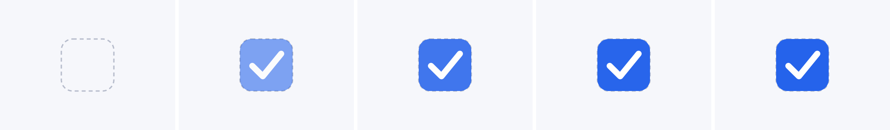
💡 The safest entrance: combine it with any move for a softer start. Use 0.3–0.6 s for UI, up to 1.5 s for calm backgrounds.Masuk paling aman: gabungkan dengan gerakan apa pun agar awalnya lebih lembut. Pakai 0,3–0,6 s untuk UI, sampai 1,5 s untuk background yang tenang.
| ParameterParameter | Range / optionsRentang / pilihan | DefaultDefault |
|---|---|---|
| EasingEasing | any easing curve (see Easing reference)kurva easing apa pun (lihat Referensi easing) | Ease Out Cubic |
Slide In ← Enter#
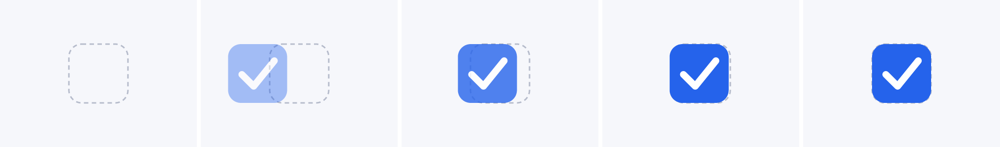
💡 Good for text and cards entering in reading order. Keep the distance small (40–120 px) for elegance, large for drama.Cocok untuk teks dan kartu yang masuk sesuai arah baca. Jarak kecil (40–120 px) terkesan elegan, jarak besar terkesan dramatis.
| ParameterParameter | Range / optionsRentang / pilihan | DefaultDefault |
|---|---|---|
| DistanceJarak | 0 – 4000 px | 200 px |
| With fadeSambil fade | YesYa, NoTidak | YesYa |
| EasingEasing | any easing curve (see Easing reference)kurva easing apa pun (lihat Referensi easing) | Ease Out Cubic |
Slide In → Enter#
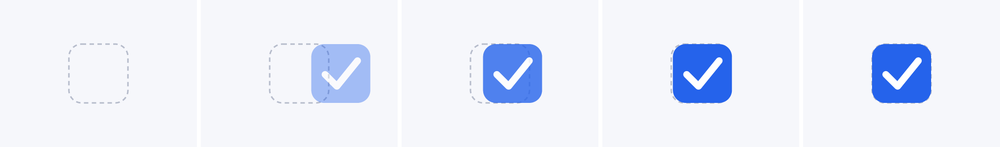
💡 Use for elements on the right side of the frame so they arrive from the nearest edge.Pakai untuk elemen di sisi kanan bingkai agar datang dari tepi terdekat.
| ParameterParameter | Range / optionsRentang / pilihan | DefaultDefault |
|---|---|---|
| DistanceJarak | 0 – 4000 px | 200 px |
| With fadeSambil fade | YesYa, NoTidak | YesYa |
| EasingEasing | any easing curve (see Easing reference)kurva easing apa pun (lihat Referensi easing) | Ease Out Cubic |
Slide In ↑ Enter#
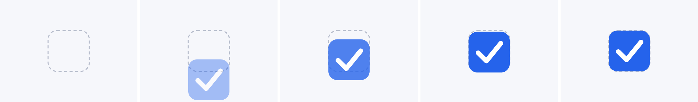
💡 The classic title move. With stagger on lines of text it reads naturally top to bottom.Gerakan judul klasik. Dengan stagger pada baris teks, urutannya terbaca alami dari atas ke bawah.
| ParameterParameter | Range / optionsRentang / pilihan | DefaultDefault |
|---|---|---|
| DistanceJarak | 0 – 4000 px | 200 px |
| With fadeSambil fade | YesYa, NoTidak | YesYa |
| EasingEasing | any easing curve (see Easing reference)kurva easing apa pun (lihat Referensi easing) | Ease Out Cubic |
Slide In ↓ Enter#
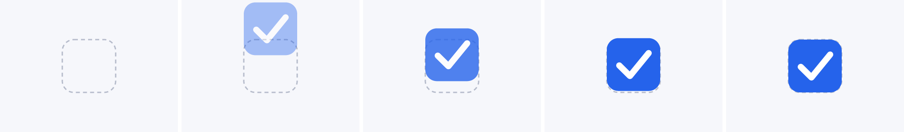
💡 Works for things that hang or drop into place: banners, labels, price tags.Cocok untuk benda yang menggantung atau turun ke tempatnya: banner, label, label harga.
| ParameterParameter | Range / optionsRentang / pilihan | DefaultDefault |
|---|---|---|
| DistanceJarak | 0 – 4000 px | 200 px |
| With fadeSambil fade | YesYa, NoTidak | YesYa |
| EasingEasing | any easing curve (see Easing reference)kurva easing apa pun (lihat Referensi easing) | Ease Out Cubic |
Scale Pop Enter#
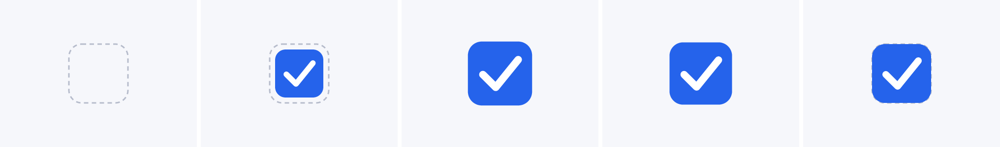
💡 The go-to for icons, buttons and badges. The slight overshoot makes it feel alive; keep the anchor in the centre.Pilihan utama untuk ikon, tombol, dan badge. Sedikit overshoot membuatnya terasa hidup; biarkan anchor di tengah.
| ParameterParameter | Range / optionsRentang / pilihan | DefaultDefault |
|---|---|---|
| EasingEasing | any easing curve (see Easing reference)kurva easing apa pun (lihat Referensi easing) | Ease Out Back |
Rotate In Enter#
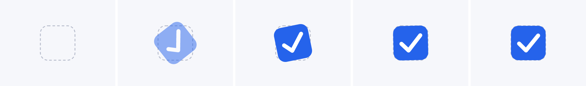
💡 Adds energy to logos and stickers. Combine with a centred anchor so it does not swing.Menambah energi pada logo dan stiker. Pakai anchor di tengah agar tidak berayun.
| ParameterParameter | Range / optionsRentang / pilihan | DefaultDefault |
|---|---|---|
| AngleSudut | -720 – 720 ° | -90 ° |
| EasingEasing | any easing curve (see Easing reference)kurva easing apa pun (lihat Referensi easing) | Ease Out Cubic |
Bounce In Enter#
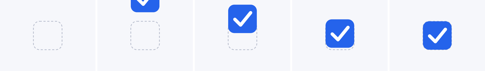
💡 Playful: cartoon objects, kids content, fun call-outs. Too much bounce feels cheap in corporate work.Ceria: objek kartun, konten anak, ajakan yang lucu. Pantulan berlebihan terasa murahan untuk pekerjaan korporat.
| ParameterParameter | Range / optionsRentang / pilihan | DefaultDefault |
|---|---|---|
| DistanceJarak | 0 – 4000 px | 300 px |
Elastic Pop Enter#
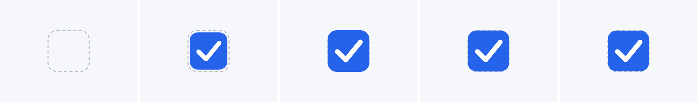
💡 A springier Scale Pop. Great for a logo dot, a notification badge or a like icon.Scale Pop yang lebih kenyal. Bagus untuk titik logo, badge notifikasi, atau ikon like.
Drop Enter#
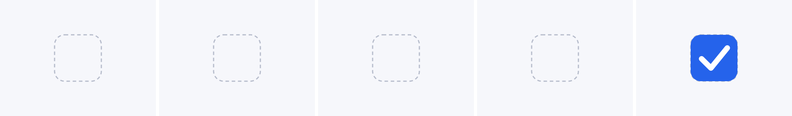
💡 Feels heavy, like gravity. Pair it with a Squash emphasis on landing.Terasa berat seperti gravitasi. Pasangkan dengan emphasis Squash saat mendarat.
| ParameterParameter | Range / optionsRentang / pilihan | DefaultDefault |
|---|---|---|
| DistanceJarak | 0 – 4000 px | 400 px |
| EasingEasing | any easing curve (see Easing reference)kurva easing apa pun (lihat Referensi easing) | Ease In Cubic |
Zoom In Enter#
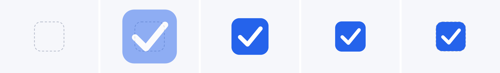
💡 Cinematic for big titles: the element settles into place from the camera's side.Sinematik untuk judul besar: elemen turun ke tempatnya seolah dari arah kamera.
| ParameterParameter | Range / optionsRentang / pilihan | DefaultDefault |
|---|---|---|
| Start scaleSkala awal | 100 – 1000 % | 300 % |
| EasingEasing | any easing curve (see Easing reference)kurva easing apa pun (lihat Referensi easing) | Ease Out Cubic |
Fly In Enter#
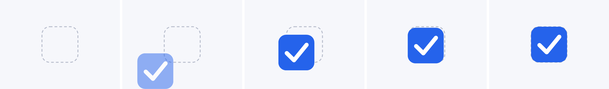
💡 For dynamic compositions where elements come from a corner; choose the corner in the parameters.Untuk komposisi dinamis dengan elemen yang datang dari sudut; pilih sudutnya di parameter.
| ParameterParameter | Range / optionsRentang / pilihan | DefaultDefault |
|---|---|---|
| DistanceJarak | 0 – 4000 px | 300 px |
| FromDari | Bottom leftKiri bawah, Bottom rightKanan bawah, Top leftKiri atas, Top rightKanan atas | Bottom leftKiri bawah |
| EasingEasing | any easing curve (see Easing reference)kurva easing apa pun (lihat Referensi easing) | Ease Out Cubic |
Spiral In Enter#
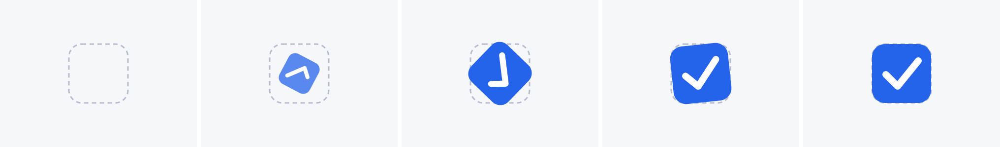
💡 Eye-catching for stickers and badges. Use sparingly: one spiral per scene is plenty.Menarik perhatian untuk stiker dan badge. Pakai seperlunya: satu spiral per adegan sudah cukup.
| ParameterParameter | Range / optionsRentang / pilihan | DefaultDefault |
|---|---|---|
| AngleSudut | -1440 – 1440 ° | -360 ° |
| EasingEasing | any easing curve (see Easing reference)kurva easing apa pun (lihat Referensi easing) | Ease Out Cubic |
Roll In Enter#
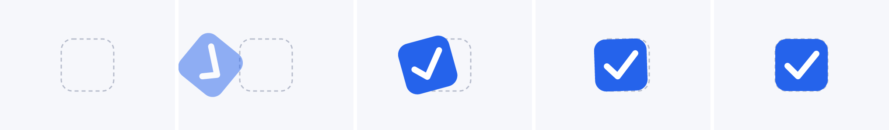
💡 For round things: wheels, coins, balls. The rotation matches the distance travelled.Untuk benda bulat: roda, koin, bola. Rotasinya sesuai jarak tempuh.
| ParameterParameter | Range / optionsRentang / pilihan | DefaultDefault |
|---|---|---|
| DistanceJarak | 0 – 4000 px | 300 px |
| AngleSudut | 0 – 1440 ° | 120 ° |
| EasingEasing | any easing curve (see Easing reference)kurva easing apa pun (lihat Referensi easing) | Ease Out Cubic |
Flip In X Enter#
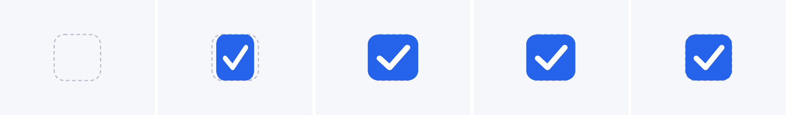
💡 Card and tile reveals. Looks 3D without any 3D setup.Membuka kartu dan ubin. Terlihat 3D tanpa perlu pengaturan 3D.
| ParameterParameter | Range / optionsRentang / pilihan | DefaultDefault |
|---|---|---|
| EasingEasing | any easing curve (see Easing reference)kurva easing apa pun (lihat Referensi easing) | Ease Out Back |
Flip In Y Enter#
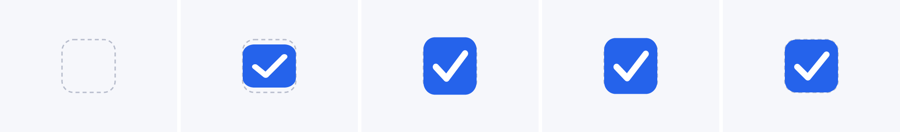
💡 Like Flip In X but vertical: good for counters and rows of tiles.Seperti Flip In X tetapi vertikal: bagus untuk penghitung dan deretan ubin.
| ParameterParameter | Range / optionsRentang / pilihan | DefaultDefault |
|---|---|---|
| EasingEasing | any easing curve (see Easing reference)kurva easing apa pun (lihat Referensi easing) | Ease Out Back |
Pop Up Enter#
💡 Ideal for letters and list items with stagger: each rises and overshoots slightly.Ideal untuk huruf dan item daftar dengan stagger: masing-masing naik dan sedikit overshoot.
| ParameterParameter | Range / optionsRentang / pilihan | DefaultDefault |
|---|---|---|
| DistanceJarak | 0 – 2000 px | 80 px |
| EasingEasing | any easing curve (see Easing reference)kurva easing apa pun (lihat Referensi easing) | Ease Out Back |
Swing In Enter#
💡 Hanging signs and pendants. Put the anchor on the hinge with the Anchor Point tool first.Papan gantung dan liontin. Taruh anchor di engsel dengan tool Anchor Point terlebih dulu.
| ParameterParameter | Range / optionsRentang / pilihan | DefaultDefault |
|---|---|---|
| AngleSudut | -180 – 180 ° | -60 ° |
Stretch In Enter#
💡 Gives cartoon squash-and-stretch energy to simple shapes.Memberi energi squash-and-stretch kartun pada bentuk sederhana.
Draw On Enter#
💡 The signature logo reveal: strokes draw from start to end. Path direction in your SVG decides where it starts.Logo reveal khas: stroke tergambar dari awal ke akhir. Arah path di SVG menentukan titik mulainya.
| ParameterParameter | Range / optionsRentang / pilihan | DefaultDefault |
|---|---|---|
| EasingEasing | any easing curve (see Easing reference)kurva easing apa pun (lihat Referensi easing) | Ease In-Out Cubic |
Draw From Centre Enter#
💡 Symmetric reveals: underlines, frames and dividers growing from the middle.Reveal simetris: garis bawah, bingkai, dan pembatas yang tumbuh dari tengah.
| ParameterParameter | Range / optionsRentang / pilihan | DefaultDefault |
|---|---|---|
| EasingEasing | any easing curve (see Easing reference)kurva easing apa pun (lihat Referensi easing) | Ease In-Out Cubic |
Blur In Enter#
💡 Soft and modern, good for backgrounds and quotes. Blur is not in Lottie; use it for video and SVG.Lembut dan modern, cocok untuk background dan kutipan. Blur tidak ada di Lottie; pakai untuk video dan SVG.
| ParameterParameter | Range / optionsRentang / pilihan | DefaultDefault |
|---|---|---|
| BlurKabur | 0 – 200 px | 24 px |
| EasingEasing | any easing curve (see Easing reference)kurva easing apa pun (lihat Referensi easing) | Ease Out Cubic |
Shear In Enter#
💡 Fast, sporty feel for headlines and sale banners.Kesan cepat dan sporty untuk headline dan banner diskon.
| ParameterParameter | Range / optionsRentang / pilihan | DefaultDefault |
|---|---|---|
| DistanceJarak | 0 – 4000 px | 240 px |
| SlantKemiringan | -80 – 80 ° | 30 ° |
| EasingEasing | any easing curve (see Easing reference)kurva easing apa pun (lihat Referensi easing) | Ease Out Cubic |
Wipe In Enter#
💡 Reveals filled shapes cleanly: bars, underlines, panels. Choose the side in From.Memunculkan bentuk berisi dengan rapi: bar, garis bawah, panel. Pilih sisinya di Dari.
| ParameterParameter | Range / optionsRentang / pilihan | DefaultDefault |
|---|---|---|
| FromDari | From the leftDari kiri, From the rightDari kanan, From the topDari atas, From the bottomDari bawah | From the leftDari kiri |
| EasingEasing | any easing curve (see Easing reference)kurva easing apa pun (lihat Referensi easing) | Ease In-Out Cubic |
Iris In Enter#
💡 A circular reveal: photos in circles, avatars, spotlight effects.Reveal melingkar: foto dalam lingkaran, avatar, efek sorotan.
| ParameterParameter | Range / optionsRentang / pilihan | DefaultDefault |
|---|---|---|
| EasingEasing | any easing curve (see Easing reference)kurva easing apa pun (lihat Referensi easing) | Ease Out Cubic |
Split Reveal Enter#
💡 Opens a panel from the centre line, like doors opening.Membuka panel dari garis tengah, seperti pintu yang terbuka.
| ParameterParameter | Range / optionsRentang / pilihan | DefaultDefault |
|---|---|---|
| EasingEasing | any easing curve (see Easing reference)kurva easing apa pun (lihat Referensi easing) | Ease Out Cubic |
Exit presetsPreset Exit#
Fade Out Exit#
💡 The neutral exit. Placed at the end of the composition automatically.Keluar yang netral. Otomatis diletakkan di akhir komposisi.
| ParameterParameter | Range / optionsRentang / pilihan | DefaultDefault |
|---|---|---|
| EasingEasing | any easing curve (see Easing reference)kurva easing apa pun (lihat Referensi easing) | Ease In Cubic |
Scale Out Exit#
💡 A tidy exit for icons and badges; the reverse of Scale Pop.Keluar yang rapi untuk ikon dan badge; kebalikan Scale Pop.
| ParameterParameter | Range / optionsRentang / pilihan | DefaultDefault |
|---|---|---|
| EasingEasing | any easing curve (see Easing reference)kurva easing apa pun (lihat Referensi easing) | Ease In Back |
Slide Out ← Exit#
💡 Pairs with Slide In → for elements that pass through the frame.Berpasangan dengan Slide In → untuk elemen yang melintasi bingkai.
| ParameterParameter | Range / optionsRentang / pilihan | DefaultDefault |
|---|---|---|
| DistanceJarak | 0 – 4000 px | 200 px |
| With fadeSambil fade | YesYa, NoTidak | YesYa |
| EasingEasing | any easing curve (see Easing reference)kurva easing apa pun (lihat Referensi easing) | Ease In Cubic |
Slide Out → Exit#
💡 Pairs with Slide In ← for continuous left-to-right motion.Berpasangan dengan Slide In ← untuk gerakan kiri-ke-kanan yang berkesinambungan.
| ParameterParameter | Range / optionsRentang / pilihan | DefaultDefault |
|---|---|---|
| DistanceJarak | 0 – 4000 px | 200 px |
| With fadeSambil fade | YesYa, NoTidak | YesYa |
| EasingEasing | any easing curve (see Easing reference)kurva easing apa pun (lihat Referensi easing) | Ease In Cubic |
Slide Out ↑ Exit#
💡 Clears titles upwards, like credits rolling.Menghapus judul ke atas, seperti kredit film.
| ParameterParameter | Range / optionsRentang / pilihan | DefaultDefault |
|---|---|---|
| DistanceJarak | 0 – 4000 px | 200 px |
| With fadeSambil fade | YesYa, NoTidak | YesYa |
| EasingEasing | any easing curve (see Easing reference)kurva easing apa pun (lihat Referensi easing) | Ease In Cubic |
Slide Out ↓ Exit#
💡 Drops elements out of the frame; feels like letting go.Menjatuhkan elemen keluar bingkai; terasa seperti dilepaskan.
| ParameterParameter | Range / optionsRentang / pilihan | DefaultDefault |
|---|---|---|
| DistanceJarak | 0 – 4000 px | 200 px |
| With fadeSambil fade | YesYa, NoTidak | YesYa |
| EasingEasing | any easing curve (see Easing reference)kurva easing apa pun (lihat Referensi easing) | Ease In Cubic |
Rotate Out Exit#
💡 The reverse of Rotate In.Kebalikan Rotate In.
| ParameterParameter | Range / optionsRentang / pilihan | DefaultDefault |
|---|---|---|
| AngleSudut | -720 – 720 ° | 90 ° |
| EasingEasing | any easing curve (see Easing reference)kurva easing apa pun (lihat Referensi easing) | Ease In Cubic |
Bounce Out Exit#
💡 A playful goodbye: a small hop, then a fall.Perpisahan yang ceria: lompatan kecil, lalu jatuh.
| ParameterParameter | Range / optionsRentang / pilihan | DefaultDefault |
|---|---|---|
| DistanceJarak | 0 – 4000 px | 400 px |
Zoom Out Exit#
💡 Feels like the element flies towards the camera.Terasa seperti elemen terbang ke arah kamera.
| ParameterParameter | Range / optionsRentang / pilihan | DefaultDefault |
|---|---|---|
| End scaleSkala akhir | 100 – 1000 % | 250 % |
| EasingEasing | any easing curve (see Easing reference)kurva easing apa pun (lihat Referensi easing) | Ease In Cubic |
Fly Out Exit#
💡 Diagonal exit; choose the corner.Keluar diagonal; pilih sudutnya.
| ParameterParameter | Range / optionsRentang / pilihan | DefaultDefault |
|---|---|---|
| DistanceJarak | 0 – 4000 px | 300 px |
| ToKe | Bottom leftKiri bawah, Bottom rightKanan bawah, Top leftKiri atas, Top rightKanan atas | Top rightKanan atas |
| EasingEasing | any easing curve (see Easing reference)kurva easing apa pun (lihat Referensi easing) | Ease In Cubic |
Spiral Out Exit#
💡 The reverse of Spiral In: a whirl away.Kebalikan Spiral In: berputar menghilang.
| ParameterParameter | Range / optionsRentang / pilihan | DefaultDefault |
|---|---|---|
| AngleSudut | -1440 – 1440 ° | 360 ° |
| EasingEasing | any easing curve (see Easing reference)kurva easing apa pun (lihat Referensi easing) | Ease In Cubic |
Roll Out Exit#
💡 Round objects rolling off to the right.Benda bulat yang menggelinding ke kanan.
| ParameterParameter | Range / optionsRentang / pilihan | DefaultDefault |
|---|---|---|
| DistanceJarak | 0 – 4000 px | 300 px |
| AngleSudut | 0 – 1440 ° | 120 ° |
| EasingEasing | any easing curve (see Easing reference)kurva easing apa pun (lihat Referensi easing) | Ease In Cubic |
Flip Out X Exit#
💡 Card flip away; pairs with Flip In X on the next card.Kartu yang berbalik pergi; berpasangan dengan Flip In X pada kartu berikutnya.
| ParameterParameter | Range / optionsRentang / pilihan | DefaultDefault |
|---|---|---|
| EasingEasing | any easing curve (see Easing reference)kurva easing apa pun (lihat Referensi easing) | Ease In Back |
Flip Out Y Exit#
💡 Vertical flip away.Berbalik pergi secara vertikal.
| ParameterParameter | Range / optionsRentang / pilihan | DefaultDefault |
|---|---|---|
| EasingEasing | any easing curve (see Easing reference)kurva easing apa pun (lihat Referensi easing) | Ease In Back |
Sink Exit#
💡 A gentle, quiet exit for secondary elements.Keluar yang lembut dan tenang untuk elemen pendukung.
| ParameterParameter | Range / optionsRentang / pilihan | DefaultDefault |
|---|---|---|
| DistanceJarak | 0 – 2000 px | 60 px |
| EasingEasing | any easing curve (see Easing reference)kurva easing apa pun (lihat Referensi easing) | Ease In Cubic |
Collapse Exit#
💡 Like a TV switching off: good for ends of scenes.Seperti TV dimatikan: bagus untuk akhir adegan.
| ParameterParameter | Range / optionsRentang / pilihan | DefaultDefault |
|---|---|---|
| EasingEasing | any easing curve (see Easing reference)kurva easing apa pun (lihat Referensi easing) | Ease In Back |
Draw Off Exit#
💡 Strokes erase themselves; the mirror of Draw On.Stroke menghapus dirinya; cermin dari Draw On.
| ParameterParameter | Range / optionsRentang / pilihan | DefaultDefault |
|---|---|---|
| EasingEasing | any easing curve (see Easing reference)kurva easing apa pun (lihat Referensi easing) | Ease In-Out Cubic |
Blur Out Exit#
💡 Dreamy exit; video and SVG only (no blur in Lottie).Keluar yang lembut; hanya video dan SVG (tidak ada blur di Lottie).
| ParameterParameter | Range / optionsRentang / pilihan | DefaultDefault |
|---|---|---|
| BlurKabur | 0 – 200 px | 24 px |
| EasingEasing | any easing curve (see Easing reference)kurva easing apa pun (lihat Referensi easing) | Ease In Cubic |
Wipe Out Exit#
💡 Hides bars and panels towards a side.Menyembunyikan bar dan panel ke arah satu sisi.
| ParameterParameter | Range / optionsRentang / pilihan | DefaultDefault |
|---|---|---|
| FromDari | From the leftDari kiri, From the rightDari kanan, From the topDari atas, From the bottomDari bawah | From the leftDari kiri |
| EasingEasing | any easing curve (see Easing reference)kurva easing apa pun (lihat Referensi easing) | Ease In-Out Cubic |
Iris Out Exit#
💡 Closes to a circle, like the classic cartoon ending.Menutup menjadi lingkaran, seperti akhir film kartun klasik.
| ParameterParameter | Range / optionsRentang / pilihan | DefaultDefault |
|---|---|---|
| EasingEasing | any easing curve (see Easing reference)kurva easing apa pun (lihat Referensi easing) | Ease In Cubic |
Loop presetsPreset Loop#
Float Loop#
💡 Makes still elements feel alive. For seamless clips make the period divide the duration (2 s in a 10 s clip).Membuat elemen diam terasa hidup. Untuk klip mulus, buat periode habis membagi durasi (2 s pada klip 10 s).
| ParameterParameter | Range / optionsRentang / pilihan | DefaultDefault |
|---|---|---|
| AmplitudeAmplitudo | 0 – 500 px | 12 px |
| PeriodPeriode | 0.1 – 30 s | 2 s |
Pulse Loop#
💡 Draws attention to a button or a dot. Small amounts (4–8 %) look premium.Menarik perhatian ke tombol atau titik. Nilai kecil (4–8 %) terlihat premium.
| ParameterParameter | Range / optionsRentang / pilihan | DefaultDefault |
|---|---|---|
| AmountBesar | 0 – 100 % | 8 % |
| PeriodPeriode | 0.1 – 30 s | 1 s |
Spin Loop#

💡 Loaders, gears, suns. A symmetric shape loops seamlessly even when the period is longer than the clip.Loader, roda gigi, matahari. Bentuk simetris tetap mulus meskipun periodenya lebih panjang dari klip.
| ParameterParameter | Range / optionsRentang / pilihan | DefaultDefault |
|---|---|---|
| Spin periodPeriode putaran | 0.1 – 60 s | 4 s |
| DirectionArah | ClockwiseSearah jarum jam, Counter-clockwiseBerlawanan | ClockwiseSearah jarum jam |
Swing Loop#
💡 Pendulums, hanging signs, leaves. Anchor = pivot.Bandul, papan gantung, daun. Anchor = poros.
| ParameterParameter | Range / optionsRentang / pilihan | DefaultDefault |
|---|---|---|
| AngleSudut | 0 – 180 ° | 10 ° |
| PeriodPeriode | 0.1 – 30 s | 2 s |
Breathe Loop#
💡 Slow, calm motion for meditation, wellness and ambient backgrounds.Gerakan pelan dan tenang untuk meditasi, wellness, dan background ambient.
| ParameterParameter | Range / optionsRentang / pilihan | DefaultDefault |
|---|---|---|
| AmountBesar | 0 – 100 % | 4 % |
| FadeRedup | 0 – 100 % | 15 % |
| PeriodPeriode | 0.1 – 30 s | 3 s |
Blink Loop#
💡 Eyes, cursors and indicator lights.Mata, kursor, dan lampu indikator.
| ParameterParameter | Range / optionsRentang / pilihan | DefaultDefault |
|---|---|---|
| PeriodPeriode | 0.1 – 30 s | 1 s |
Orbit Loop#
💡 Planets, particles, decorative dots circling their spot.Planet, partikel, titik dekoratif yang mengitari tempatnya.
| ParameterParameter | Range / optionsRentang / pilihan | DefaultDefault |
|---|---|---|
| RadiusJari-jari | 0 – 2000 px | 30 px |
| PeriodPeriode | 0.1 – 60 s | 3 s |
| DirectionArah | ClockwiseSearah jarum jam, Counter-clockwiseBerlawanan | ClockwiseSearah jarum jam |
Figure 8 Loop#
💡 An organic, wandering path for insects, sparks and floating particles.Lintasan organik yang mengembara untuk serangga, percikan, dan partikel melayang.
| ParameterParameter | Range / optionsRentang / pilihan | DefaultDefault |
|---|---|---|
| AmplitudeAmplitudo | 0 – 2000 px | 30 px |
| PeriodPeriode | 0.1 – 60 s | 4 s |
Bounce Loop#
💡 A ball or character hopping in place. Anchor at the bottom for a nice squash.Bola atau karakter melompat di tempat. Anchor di bawah agar squash-nya bagus.
| ParameterParameter | Range / optionsRentang / pilihan | DefaultDefault |
|---|---|---|
| HeightTinggi | 0 – 2000 px | 40 px |
| SquashSquash | 0 – 100 % | 15 % |
| PeriodPeriode | 0.1 – 30 s | 1 s |
Wobble Loop#
💡 Jelly-like idle motion for mascots and blobs.Gerakan diam seperti jeli untuk maskot dan bentuk blob.
| ParameterParameter | Range / optionsRentang / pilihan | DefaultDefault |
|---|---|---|
| AngleSudut | 0 – 90 ° | 6 ° |
| AmountBesar | 0 – 100 % | 5 % |
| PeriodPeriode | 0.1 – 30 s | 2 s |
Glow Loop#
💡 Lights, stars, neon signs. Lower min for a stronger flicker.Lampu, bintang, papan neon. Turunkan min untuk kedip yang lebih kuat.
| ParameterParameter | Range / optionsRentang / pilihan | DefaultDefault |
|---|---|---|
| Lowest opacityOpacity terendah | 0 – 100 % | 40 % |
| PeriodPeriode | 0.1 – 30 s | 2 s |
Drift Loop#
💡 Bubbles, dust, clouds. Give each item a different period for natural variety.Gelembung, debu, awan. Beri periode berbeda pada setiap item agar variasinya alami.
| ParameterParameter | Range / optionsRentang / pilihan | DefaultDefault |
|---|---|---|
| AmplitudeAmplitudo | 0 – 2000 px | 20 px |
| RotationRotasi | 0 – 90 ° | 3 ° |
| PeriodPeriode | 0.5 – 60 s | 6 s |
Hover Loop#
💡 Floating objects with a gentle tilt: drones, balloons, product shots.Benda melayang dengan sedikit miring: drone, balon, foto produk.
| ParameterParameter | Range / optionsRentang / pilihan | DefaultDefault |
|---|---|---|
| AmplitudeAmplitudo | 0 – 500 px | 10 px |
| TiltKemiringan | 0 – 45 ° | 3 ° |
| PeriodPeriode | 0.1 – 30 s | 3 s |
Tick Loop#
💡 Clock hands and step-by-step rotation. Set steps to 60 for a seconds hand.Jarum jam dan rotasi bertahap. Atur steps ke 60 untuk jarum detik.
| ParameterParameter | Range / optionsRentang / pilihan | DefaultDefault |
|---|---|---|
| Steps per turnLangkah per putaran | 2 – 120 | 12 |
| Spin periodPeriode putaran | 0.1 – 120 s | 12 s |
Trace Loop#
💡 A light running along a line: circuits, routes on a map, neon outlines.Cahaya yang berjalan di sepanjang garis: sirkuit, rute di peta, garis neon.
| ParameterParameter | Range / optionsRentang / pilihan | DefaultDefault |
|---|---|---|
| LengthPanjang | 1 – 99 % | 25 % |
| PeriodPeriode | 0.1 – 60 s | 2 s |
Sway Loop#
💡 Plants, grass, flags and waves moving in the wind.Tanaman, rumput, bendera, dan ombak yang bergerak tertiup angin.
| ParameterParameter | Range / optionsRentang / pilihan | DefaultDefault |
|---|---|---|
| SlantKemiringan | 0 – 80 ° | 10 ° |
| PeriodPeriode | 0.1 – 30 s | 2 s |
Tint Pulse Loop#
💡 Colour breathing: alerts, highlights, mood changes.Warna yang bernapas: peringatan, sorotan, perubahan suasana.
| ParameterParameter | Range / optionsRentang / pilihan | DefaultDefault |
|---|---|---|
| ColourWarna | any colourwarna apa pun | #ffd54a |
| StrengthKekuatan | 0 – 100 % | 60 % |
| PeriodPeriode | 0.1 – 30 s | 2 s |
Emphasis presetsPreset Emphasis#
Shake Emphasis#
💡 Errors, wrong answers, impact moments.Kesalahan, jawaban salah, momen benturan.
| ParameterParameter | Range / optionsRentang / pilihan | DefaultDefault |
|---|---|---|
| AmplitudeAmplitudo | 0 – 200 px | 12 px |
| FrequencyFrekuensi | 1 – 30 Hz | 8 Hz |
Heartbeat Emphasis#
💡 Likes, love, health topics, “buy now” moments.Like, cinta, topik kesehatan, momen “beli sekarang”.
| ParameterParameter | Range / optionsRentang / pilihan | DefaultDefault |
|---|---|---|
| AmountBesar | 0 – 100 % | 12 % |
Tada Emphasis#
💡 Celebrations and achievements.Perayaan dan pencapaian.
Jello Emphasis#
💡 Playful attention grabber for mascots and buttons.Penarik perhatian yang ceria untuk maskot dan tombol.
| ParameterParameter | Range / optionsRentang / pilihan | DefaultDefault |
|---|---|---|
| AmountBesar | 0 – 100 % | 12 % |
Wiggle Emphasis#
💡 Hand-made, nervous or electric motion. Change the seed for a different pattern.Gerakan buatan tangan, gugup, atau bertenaga listrik. Ganti seed untuk pola berbeda.
| ParameterParameter | Range / optionsRentang / pilihan | DefaultDefault |
|---|---|---|
| AmplitudeAmplitudo | 0 – 500 px | 10 px |
| RotationRotasi | 0 – 180 ° | 3 ° |
| FrequencyFrekuensi | 0.1 – 30 Hz | 4 Hz |
| SeedSeed | 0 – 9999 | 1 |
Flash Emphasis#
💡 Blinks a few times: notifications, “new”, alerts.Berkedip beberapa kali: notifikasi, “baru”, peringatan.
| ParameterParameter | Range / optionsRentang / pilihan | DefaultDefault |
|---|---|---|
| CountJumlah | 1 – 10 × | 2 × |
Rubber Band Emphasis#
💡 Stretchy squish for cartoon buttons and icons.Pipih kenyal untuk tombol dan ikon kartun.
Head Shake Emphasis#
💡 Saying “no”: wrong answers, rejected actions.Mengatakan “tidak”: jawaban salah, aksi yang ditolak.
| ParameterParameter | Range / optionsRentang / pilihan | DefaultDefault |
|---|---|---|
| AmplitudeAmplitudo | 0 – 200 px | 12 px |
Nod Emphasis#
💡 Saying “yes”: confirmations and agreement.Mengatakan “ya”: konfirmasi dan persetujuan.
| ParameterParameter | Range / optionsRentang / pilihan | DefaultDefault |
|---|---|---|
| DistanceJarak | 0 – 200 px | 10 px |
Spin Emphasis#
💡 A full turn to celebrate or to switch state (refresh icons).Satu putaran penuh untuk merayakan atau berganti keadaan (ikon refresh).
| ParameterParameter | Range / optionsRentang / pilihan | DefaultDefault |
|---|---|---|
| TurnsPutaran | 1 – 10 × | 1 × |
| DirectionArah | ClockwiseSearah jarum jam, Counter-clockwiseBerlawanan | ClockwiseSearah jarum jam |
| EasingEasing | any easing curve (see Easing reference)kurva easing apa pun (lihat Referensi easing) | Ease In-Out Cubic |
Flip Emphasis#
💡 Turn a card or coin over once.Membalik kartu atau koin satu kali.
| ParameterParameter | Range / optionsRentang / pilihan | DefaultDefault |
|---|---|---|
| EasingEasing | any easing curve (see Easing reference)kurva easing apa pun (lihat Referensi easing) | Ease In-Out Cubic |
Pop Emphasis#
💡 A quick “look here” for logos and prices. Used at 3 s on the logo sample.“Lihat ke sini” yang cepat untuk logo dan harga. Dipakai di detik 3 pada contoh logo.
| ParameterParameter | Range / optionsRentang / pilihan | DefaultDefault |
|---|---|---|
| AmountBesar | 0 – 200 % | 20 % |
Squash Emphasis#
💡 Landing impact after a Drop or Bounce In. Anchor at the bottom.Benturan mendarat setelah Drop atau Bounce In. Anchor di bawah.
| ParameterParameter | Range / optionsRentang / pilihan | DefaultDefault |
|---|---|---|
| AmountBesar | 0 – 100 % | 25 % |
Nudge Emphasis#
💡 A small push to suggest direction: arrows, “swipe” hints.Dorongan kecil untuk menunjukkan arah: panah, petunjuk “geser”.
| ParameterParameter | Range / optionsRentang / pilihan | DefaultDefault |
|---|---|---|
| DistanceJarak | 0 – 500 px | 20 px |
| DirectionArah | RightKanan, LeftKiri, UpAtas, DownBawah | RightKanan |
Swing Emphasis#
💡 A sign swinging after being hit; anchor = pivot.Papan yang berayun setelah tersenggol; anchor = poros.
| ParameterParameter | Range / optionsRentang / pilihan | DefaultDefault |
|---|---|---|
| AngleSudut | 0 – 90 ° | 15 ° |
Focus Pulse Emphasis#
💡 Briefly out of focus, then sharp: rack-focus feel.Sesaat tidak fokus, lalu tajam: kesan rack focus kamera.
| ParameterParameter | Range / optionsRentang / pilihan | DefaultDefault |
|---|---|---|
| BlurKabur | 0 – 200 px | 10 px |
Lean Emphasis#
💡 Leans and springs back: excitement, a gust of wind.Miring lalu kembali memantul: antusiasme, embusan angin.
| ParameterParameter | Range / optionsRentang / pilihan | DefaultDefault |
|---|---|---|
| SlantKemiringan | -80 – 80 ° | 18 ° |
Color Flash Emphasis#
💡 Flashes a colour: hits, highlights, “on sale” moments.Kilatan warna: benturan, sorotan, momen “diskon”.
| ParameterParameter | Range / optionsRentang / pilihan | DefaultDefault |
|---|---|---|
| ColourWarna | any colourwarna apa pun | #ffffff |
| StrengthKekuatan | 0 – 100 % | 100 % |
Jump Emphasis#
💡 A happy double jump for characters and icons.Lompatan ganda yang ceria untuk karakter dan ikon.
| ParameterParameter | Range / optionsRentang / pilihan | DefaultDefault |
|---|---|---|
| HeightTinggi | 0 – 2000 px | 30 px |
13Keyframes and easingKeyframe dan easing#
Full control: set values at moments in time and Motionator fills in the frames between.
Kontrol penuh: tentukan nilai pada titik waktu tertentu dan Motionator mengisi frame di antaranya.
Making keyframesMembuat keyframe#
- Switch to the Advanced workspace Shift+F11 and twirl a layer open with its arrow.Pindah ke workspace Advanced Shift+F11 dan buka layer dengan panahnya.
- Click the stopwatch next to a property (here or in the Properties panel). A keyframe is made at the playhead with the current value.Klik stopwatch di samping properti (di sini atau di panel Properties). Keyframe dibuat di playhead dengan nilai saat ini.
- Move the playhead and change the value, by dragging the number, typing, or moving the layer on the canvas. A new keyframe is added automatically.Pindahkan playhead lalu ubah nilainya, dengan menyeret angka, mengetik, atau memindah layer di canvas. Keyframe baru otomatis ditambahkan.
- Use the ◇ button to add or remove a keyframe at the playhead, and ‹ › to jump between keyframes (J / K).Pakai tombol ◇ untuk menambah atau menghapus keyframe di playhead, dan ‹ › untuk melompat antarkeyframe (J / K).
- Select keyframes by clicking; Shift-click to select several.
- Pilih keyframe dengan klik; Shift+klik untuk memilih beberapa.
- Move them by dragging; Delete removes them.
- Pindahkan dengan menyeret; Delete menghapusnya.
- Clicking the stopwatch again removes all keyframes of that property.
- Klik stopwatch sekali lagi untuk menghapus semua keyframe properti itu.
- U shows only the properties that are animated.
- U hanya menampilkan properti yang beranimasi.
EasingEasing#
Easing controls how a value speeds up and slows down between keyframes. Select keyframes and press:
Easing mengatur bagaimana nilai mempercepat dan melambat di antara keyframe. Pilih keyframe lalu tekan:
| EasingEasing | KeyTombol | Feels likeKesannya |
|---|---|---|
| Linear | Constant speed, mechanical.Kecepatan tetap, mekanis. | |
| Easy Ease | F9 | Slows into and out of the keyframe: natural motion.Melambat saat masuk dan keluar dari keyframe: gerakan alami. |
| Easy Ease In | Shift+F9 | Arrives gently (slows down into the keyframe).Tiba dengan lembut (melambat menuju keyframe). |
| Easy Ease Out | Ctrl+Shift+F9 | Leaves gently (speeds up out of the keyframe).Berangkat dengan lembut (mempercepat keluar dari keyframe). |
For finer control, shape the curve in the Graph Editor.
Untuk kontrol lebih halus, bentuk kurvanya di Graph Editor.
14Easing referenceReferensi easing#
The 22 named curves you can pick for a preset's Easing parameter.
22 kurva bernama yang bisa dipilih untuk parameter Easing preset.
Each curve shows progress (up) over time (right). The blue dots are the bezier handles; the numbers are the CSS cubic-bezier() values, so you can reuse them in web projects. Curves that go above the box overshoot (Back) and give a springy feel.
Setiap kurva menunjukkan progres (atas) terhadap waktu (kanan). Titik biru adalah handle bezier; angkanya adalah nilai CSS cubic-bezier(), jadi bisa dipakai ulang di proyek web. Kurva yang keluar dari kotak berarti overshoot (Back) dan memberi kesan memantul.
0, 0, 1, 10.333, 0, 0.667, 10.12, 0, 0.39, 00.61, 1, 0.88, 10.37, 0, 0.63, 10.11, 0, 0.5, 00.5, 1, 0.89, 10.45, 0, 0.55, 10.32, 0, 0.67, 00.33, 1, 0.68, 10.65, 0, 0.35, 10.5, 0, 0.75, 00.25, 1, 0.5, 10.76, 0, 0.24, 10.7, 0, 0.84, 00.16, 1, 0.3, 10.87, 0, 0.13, 10.36, 0, 0.66, -0.560.34, 1.56, 0.64, 10.68, -0.6, 0.32, 1.60.55, 0, 1, 0.450, 0.55, 0.45, 1Choosing an easingMemilih easing#
| FamilyKeluarga | CharacterKarakter | Use forDipakai untuk |
|---|---|---|
| Sine | Very gentleSangat lembut | Slow ambient loops, backgroundsLoop ambient yang pelan, background |
| Quad / Cubic | Natural, balancedAlami, seimbang | Most UI and text motion (Cubic is the default of many presets)Kebanyakan gerakan UI dan teks (Cubic adalah default banyak preset) |
| Quart / Expo | Snappy, decisiveTegas, cepat | Fast reveals, modern tech lookReveal cepat, kesan teknologi modern |
| Circ | Sudden start or stopMulai atau berhenti mendadak | Mechanical, physical motionGerakan mekanis dan fisik |
| Back | Overshoots and settlesMelewati lalu kembali | Pops, icons, playful entrancesPop, ikon, kemunculan yang ceria |
- Ease Out curves (fast start, slow end) for things entering: they arrive and settle.
- Kurva Ease Out (awal cepat, akhir lambat) untuk benda yang masuk: datang lalu tenang.
- Ease In curves (slow start, fast end) for things leaving: they gather speed and go.
- Kurva Ease In (awal lambat, akhir cepat) untuk benda yang keluar: mengumpulkan kecepatan lalu pergi.
- Ease In-Out for things moving from one place to another on screen.
- Ease In-Out untuk benda yang berpindah dari satu tempat ke tempat lain di layar.
- Linear only for constant motion: spinning loaders, scrolling tickers, Trace.
- Linear hanya untuk gerakan konstan: loader berputar, teks berjalan, Trace.
15Graph EditorGraph Editor#
See and shape the timing of keyframes as curves.
Lihat dan bentuk timing keyframe sebagai kurva.
Open it with Shift+F3 or the graph button at the top of the timeline (Advanced workspace). Choose the property in the drop-down; only properties with keyframes are listed.
Buka dengan Shift+F3 atau tombol grafik di atas timeline (workspace Advanced). Pilih properti di drop-down; hanya properti berkeyframe yang ditampilkan.
Value graphGrafik nilai#
- Drag a key (square) up or down to change its value, left or right to change its time.
- Seret key (kotak) ke atas/bawah untuk mengubah nilainya, ke kiri/kanan untuk mengubah waktunya.
- Drag the round handles to shape the easing: long, flat handles give a soft ease; short ones a sharp change.
- Seret handle bulat untuk membentuk easing: handle panjang dan datar memberi ease lembut; handle pendek memberi perubahan tajam.
- Easy Ease and Linear buttons set the selected segments.
- Tombol Easy Ease dan Linear mengatur segmen terpilih.
Speed graphGrafik kecepatan#
The speed graph shows how fast the value changes (units per second). It is for reading: a smooth hill means a natural ease, a sharp corner means a jolt. Edit easing in the value graph and watch the result here.
Grafik kecepatan menunjukkan seberapa cepat nilai berubah (satuan per detik). Grafik ini untuk dibaca: bukit yang halus berarti ease alami, sudut tajam berarti hentakan. Ubah easing di grafik nilai dan lihat hasilnya di sini.
16Motion pathsMotion path#
Position keyframes form a path you can see and curve on the canvas.
Keyframe posisi membentuk lintasan yang bisa dilihat dan dilengkungkan di canvas.
- When Position has two or more keyframes, the selected layer shows its path on the canvas.
- Bila Position punya dua keyframe atau lebih, layer terpilih menampilkan lintasannya di canvas.
- Drag a keyframe square to move that position.
- Seret kotak keyframe untuk memindah posisi itu.
- Drag a handle to bend the path into a curve. Handles on both sides stay in line for a smooth curve.
- Seret handle untuk melengkungkan lintasan. Handle di kedua sisi tetap segaris agar kurvanya halus.
- With the Pen tool G, click a keyframe to switch between a smooth curve and a sharp corner.
- Dengan tool Pen G, klik keyframe untuk beralih antara kurva halus dan sudut tajam.
- Hold Alt while dragging a handle to break the pair and make a sharp turn.
- Tahan Alt saat menyeret handle untuk memisahkan pasangannya dan membuat belokan tajam.
Motion paths are exported to Lottie as real curves, so the web version moves exactly like the video.
Motion path diekspor ke Lottie sebagai kurva asli, jadi versi web bergerak persis seperti videonya.
17Trim Paths: drawing lines onTrim Paths: menggambar garis#
Show only part of each stroke to draw logos and line art on.
Tampilkan hanya sebagian setiap stroke untuk menggambar logo dan line art.
| PropertyProperti | MeaningArti |
|---|---|
| Start | Where the visible part begins, 0–100 % of the path length.Awal bagian yang terlihat, 0–100 % panjang path. |
| End | Where it ends. Animate End from 0 % to 100 % to draw the line on.Akhirnya. Animasikan End dari 0 % ke 100 % untuk menggambar garis. |
| Offset | Shifts both along the path in degrees (360° = once around). Animate it to make a segment travel.Menggeser keduanya di sepanjang path dalam derajat (360° = satu putaran). Animasikan untuk membuat segmen berjalan. |
Trim Paths applies to every stroked path inside the layer, each path trimmed on its own. The easiest way is the Draw On, Draw From Centre, Draw Off and Trace presets; for full control, keyframe Start, End and Offset.
Trim Paths berlaku untuk setiap path ber-stroke di dalam layer, masing-masing dipangkas sendiri. Cara termudah adalah preset Draw On, Draw From Centre, Draw Off, dan Trace; untuk kontrol penuh, beri keyframe pada Start, End, dan Offset.
The ring and the wave of the logo sample are drawn on with Draw On.
Cincin dan gelombang pada contoh logo tergambar dengan Draw On.
Trim Paths only affects strokes. Filled shapes are not affected; reveal those with Wipe In or Iris In instead.
Trim Paths hanya memengaruhi stroke. Bentuk berisi tidak terpengaruh; munculkan dengan Wipe In atau Iris In.
18Effects and what each export supportsEfek dan dukungan setiap ekspor#
Every layer has Skew, Blur, Tint and Reveal in the Properties panel, each with its own stopwatch. Not every web format can show every effect, so plan with this table if you export to Lottie or SVG:
Setiap layer punya Skew, Blur, Tint, dan Reveal di panel Properties, masing-masing dengan stopwatch sendiri. Tidak semua format web bisa menampilkan setiap efek, jadi rencanakan dengan tabel ini bila mengekspor ke Lottie atau SVG:
| FeatureFitur | VideoVideo | Lottie | Animated SVGSVG animasi |
|---|---|---|---|
| Transform, opacity, skewTransform, opacity, skew | ✓ | ✓ | ✓ |
| Curved motion pathsMotion path melengkung | ✓ | ✓ | ✓ |
| Trim Paths | ✓ | ✓ | ✓ |
| Blur | ✓ | ✗ | ~ CSS blur (may differ slightly per browser)~ blur CSS (bisa sedikit beda antarbrowser) |
| Tint | ✓ | ✓ | ✗ |
| Reveal / wipe | ✓ | ~ as a mask (not on the root SVG layer)~ sebagai mask (tidak pada layer SVG utama) | ✗ |
| Clip paths from the SVGClip-path dari SVG | ✓ | ~ outer clip only when nested~ hanya clip terluar bila bertingkat | ✓ |
| SVG filters, patterns, blend modesFilter, pattern, blend mode SVG | ✓ | ✗ | ✓ |
| Audio | ✓ | ✗ | ✗ |
Each export shows a compatibility report listing exactly what was simplified or left out, so nothing is lost silently.
Setiap ekspor menampilkan laporan kompatibilitas yang mencantumkan apa saja yang disederhanakan atau diabaikan, jadi tidak ada yang hilang diam-diam.
19Saving your own presetsMenyimpan preset sendiri#
- Animate a layer with keyframes until you like the motion.Animasikan layer dengan keyframe sampai gerakannya pas.
- Choose Animation ▸ Save as Preset…, give it a name and a category (Enter, Exit, Loop or Emphasis).Pilih Animation ▸ Simpan sebagai Preset…, beri nama dan kategori (Enter, Exit, Loop, atau Emphasis).
- It appears under My Presets in the Presets panel, in every project. Apply it like any other preset.Preset muncul di My Presets pada panel Presets, di semua proyek. Terapkan seperti preset lain.
Keyframes are saved as changes from the layer's rest pose (e.g. “move 200 px left and fade in”), so the preset works on other layers wherever they are. A project that uses your preset keeps its own copy, so it still opens on another computer. Delete a preset with the trash icon in My Presets.
Keyframe disimpan sebagai perubahan dari pose diam layer (misalnya “geser 200 px ke kiri dan muncul perlahan”), jadi preset bekerja di layer lain di mana pun letaknya. Proyek yang memakai preset Anda menyimpan salinannya sendiri, jadi tetap bisa dibuka di komputer lain. Hapus preset dengan ikon tempat sampah di My Presets.
20AudioAudio#
One soundtrack per project, with a waveform for timing.
Satu trek audio per proyek, dengan waveform untuk mengatur timing.
- Choose File ▸ Import Audio… Ctrl+Alt+I or drag an audio file onto the window (WAV, MP3, AAC/M4A, FLAC, OGG).Pilih File ▸ Impor Audio… Ctrl+Alt+I atau seret file audio ke jendela (WAV, MP3, AAC/M4A, FLAC, OGG).
- The track appears at the bottom of the timeline. Drag it to move it in time; drag its edges to trim it.Trek muncul di bawah timeline. Seret untuk menggeser waktunya; seret tepinya untuk memangkas.
- Click the track to edit it in the Properties panel.Klik trek untuk mengeditnya di panel Properties.
| SettingPengaturan | MeaningArti |
|---|---|
| Starts atMulai di | Where the sound starts in the composition.Titik mulai suara di komposisi. |
| Trim startPotong awal | Skips the beginning of the file.Melewati bagian awal file. |
| DurationDurasi | How long it plays.Lama diputar. |
| Fade in / Fade outFade in / Fade out | Smooth volume ramps at both ends (seconds).Naik/turun volume yang halus di kedua ujung (detik). |
| VolumeVolume | Gain in dB (0 dB = original).Gain dalam dB (0 dB = asli). |
| MuteBisukan | Silences the track, in preview and export.Membisukan trek, saat preview dan ekspor. |
Audio plays along with the preview and is mixed into MP4 (AAC 320 kbps), MOV (24-bit PCM) and WebM (Opus). Lottie and animated SVG have no sound. Replace swaps the file and keeps the timing; the trash icon removes the track.
Audio ikut diputar saat preview dan dimasukkan ke MP4 (AAC 320 kbps), MOV (PCM 24-bit), dan WebM (Opus). Lottie dan SVG animasi tidak bersuara. Ganti menukar file dengan timing yang sama; ikon tempat sampah menghapus trek.
The audio file is not stored inside the project. Keep it next to the .motionator file; if it is moved, the track shows File missing and Replace lets you find it again.
File audio tidak disimpan di dalam proyek. Simpan di samping file .motionator; bila dipindah, trek menampilkan File hilang dan Ganti untuk mencarinya lagi.
21Animation principles for motion designPrinsip animasi untuk motion design#
The classic rules of animation, and the Motionator feature for each.
Aturan klasik animasi, dan fitur Motionator untuk masing-masing.
TimingTiming#
How long a motion lasts sets its mood: short is energetic, long is calm. Typical durations:
Lama sebuah gerakan menentukan suasananya: singkat terasa enerjik, panjang terasa tenang. Durasi umum:
| ContentKonten | Typical durationDurasi umum |
|---|---|
| Button and icon feedback (web/app)Umpan balik tombol dan ikon (web/aplikasi) | 0.15 – 0.3 s |
| UI elements entering, cards, menusElemen UI masuk, kartu, menu | 0.3 – 0.6 s |
| Titles and text linesJudul dan baris teks | 0.5 – 1 s |
| Logo reveal (whole)Logo reveal (keseluruhan) | 2 – 5 s |
| Social media postPostingan media sosial | 5 – 15 s |
| Stock background loopLoop background stok | 10 – 30 s |
Spacing and easingSpacing dan easing#
The dots show where an object is on equally spaced frames. Linear motion has equal steps and looks robotic. Eased motion bunches frames at the ends, so the object speeds up and slows down like a real object with weight. Press F9 on keyframes, or pick an easing for a preset.
Titik-titik menunjukkan letak benda pada frame yang berjarak sama. Gerakan linear punya langkah sama dan terlihat seperti robot. Gerakan dengan easing merapatkan frame di ujung-ujungnya, sehingga benda mempercepat dan melambat seperti benda nyata yang punya berat. Tekan F9 pada keyframe, atau pilih easing untuk preset.
AnticipationAntisipasi#
A small move in the opposite direction before the main action prepares the eye: a character crouches before jumping, a button shrinks slightly before popping. In Motionator, keyframe a small opposite value just before the motion, or use curves with a negative handle such as Ease In Back.
Gerakan kecil ke arah berlawanan sebelum aksi utama mempersiapkan mata: karakter berjongkok sebelum melompat, tombol sedikit mengecil sebelum membesar. Di Motionator, beri keyframe nilai berlawanan kecil tepat sebelum gerakan, atau pakai kurva dengan handle negatif seperti Ease In Back.
Follow-through and overshootFollow-through dan overshoot#
Real objects do not stop dead; they go a little too far and settle. Scale Pop, Pop Up and Elastic Pop do this built in, and any preset can use Ease Out Back. In keyframes, add a key slightly past the final value a few frames before the end.
Benda nyata tidak berhenti mendadak; benda bergerak sedikit terlalu jauh lalu tenang. Scale Pop, Pop Up, dan Elastic Pop sudah melakukannya, dan preset apa pun bisa memakai Ease Out Back. Dengan keyframe, tambahkan key sedikit melewati nilai akhir beberapa frame sebelum akhir.
Overlapping action and staggerOverlapping action dan stagger#
When parts start at slightly different times and overlap, motion feels fluid and organic. Waiting for each part to finish feels slow and mechanical. Use Stagger with a step shorter than the preset's duration (e.g. 0.08 s for 0.6 s Pop Up) for overlap.
Bila bagian-bagian mulai pada waktu yang sedikit berbeda dan tumpang tindih, gerakan terasa luwes dan organik. Menunggu setiap bagian selesai terasa lambat dan mekanis. Pakai Stagger dengan jeda lebih pendek dari durasi preset (misalnya 0,08 s untuk Pop Up 0,6 s) agar tumpang tindih.
ArcsLengkungan (arcs)#
Living things move along curves, not straight lines. Curve your motion paths with the handles on the canvas; the plane in the icon sample swoops instead of sliding.
Makhluk hidup bergerak di sepanjang kurva, bukan garis lurus. Lengkungkan motion path dengan handle di canvas; pesawat pada contoh ikon meliuk alih-alih meluncur lurus.
Secondary actionAksi sekunder#
A small extra motion supports the main one: the badge hovers while the plane flies, a glow pulses while the logo sits. Add a Loop preset with a small amount on top of the main animation.
Gerakan tambahan kecil mendukung gerakan utama: badge melayang saat pesawat terbang, cahaya berdenyut saat logo diam. Tambahkan preset Loop dengan nilai kecil di atas animasi utama.
Squash and stretchSquash dan stretch#
Squashing on impact and stretching in fast motion gives flexibility and weight. Squash, Stretch In, Rubber Band and the Bounce loop do this; keep the anchor at the contact point.
Memipih saat benturan dan meregang saat bergerak cepat memberi kesan lentur dan berat. Squash, Stretch In, Rubber Band, dan loop Bounce melakukannya; letakkan anchor di titik sentuh.
Hierarchy and restraintHierarki dan pengendalian diri#
- Animate the most important thing first and most clearly; let secondary items follow.
- Animasikan hal terpenting lebih dulu dan paling jelas; biarkan elemen pendukung menyusul.
- Use one or two kinds of motion per scene. Ten different presets at once looks busy.
- Pakai satu atau dua jenis gerakan per adegan. Sepuluh preset berbeda sekaligus terlihat ramai.
- Leave moments of stillness so the viewer can read.
- Sisakan momen diam agar penonton bisa membaca.
- Match motion to the brand: soft eases for calm brands, snappy Expo and Back for energetic ones.
- Sesuaikan gerakan dengan merek: easing lembut untuk merek tenang, Expo dan Back yang tegas untuk merek enerjik.
22Video export: Render QueueEkspor video: Render Queue#
Render one composition to several formats and sizes in one go.
Render satu komposisi ke beberapa format dan ukuran sekaligus.
- Click Export or press Ctrl+M: the composition is added to the queue. Add it again for more outputs.Klik Export atau tekan Ctrl+M: komposisi ditambahkan ke antrean. Tambahkan lagi untuk output lain.
- Choose the format and size of each item, and tick Blur for motion blur.Pilih format dan ukuran setiap item, dan centang Blur untuk motion blur.
- Click Choose output… to set the file name.Klik Pilih tujuan… untuk menentukan nama file.
- Press Render. Items render one after another with progress and time left; each can be cancelled.Tekan Render. Item dirender satu per satu dengan progres dan sisa waktu; masing-masing bisa dibatalkan.
FormatsFormat#
| FormatFormat | TransparencyTransparansi | Use it forDipakai untuk |
|---|---|---|
| H.264 (MP4) | ✗ | Stock footage, social media, presentations: plays everywhere.Footage stok, media sosial, presentasi: bisa diputar di mana saja. |
| ProRes 422 HQ (MOV) | ✗ | Masters for editing and for stock sites that accept ProRes; large files.Master untuk editing dan situs stok yang menerima ProRes; file besar. |
| ProRes 4444 (MOV) | ✓ | Overlays with transparency for video editors (Premiere, Resolve, Final Cut).Overlay transparan untuk editor video (Premiere, Resolve, Final Cut). |
| VP9 (WebM) | ✓ | Transparent video for websites.Video transparan untuk website. |
Size scales the composition to 720p, 1080p, 1440p or 2160p (4K UHD) keeping its aspect ratio, or keeps the composition size. Because Motionator draws vectors, a 4K render is as sharp as the composition at any size. H.264 and VP9 need even widths and heights; an odd size is shown in red.
Ukuran menskala komposisi ke 720p, 1080p, 1440p, atau 2160p (4K UHD) dengan rasio tetap, atau memakai ukuran komposisi. Karena Motionator menggambar vektor, render 4K tetap tajam di ukuran berapa pun. H.264 dan VP9 butuh lebar dan tinggi genap; ukuran ganjil ditandai merah.
Motion blur blends 8 sub-frames per frame (180° shutter) for natural blur on fast motion. It takes about 8× longer to render.
Motion blur memadukan 8 sub-frame per frame (shutter 180°) untuk blur alami pada gerakan cepat. Render menjadi sekitar 8× lebih lama.
Stock presets and checksPreset stok dan pemeriksaan#
Stock preset… adds an item already set up for microstock sites:
Preset stok… menambahkan item yang sudah diatur untuk situs microstock:
| PresetPreset | OutputOutput |
|---|---|
| Microstock 4K · H.264 | 3840×2160, high-quality H.264 (CRF 12)3840×2160, H.264 kualitas tinggi (CRF 12) |
| Microstock 4K · ProRes 422 HQ | 3840×2160 masterMaster 3840×2160 |
| Microstock HD · H.264 | 1920×1080, H.264 (CRF 14)1920×1080, H.264 (CRF 14) |
A yellow warning appears on an item when something is commonly rejected by stock sites: a clip shorter than 5 s or longer than 60 s, a height below 1080 px, a non-standard frame rate, or a format with alpha. Always check the current rules of the site you upload to.
Peringatan kuning muncul pada item bila ada yang umumnya ditolak situs stok: klip lebih pendek dari 5 s atau lebih panjang dari 60 s, tinggi di bawah 1080 px, frame rate tidak standar, atau format dengan alpha. Selalu cek aturan terbaru situs tujuan.
Checking a seamless loopMemeriksa loop mulus#
Looping backgrounds sell better when they repeat without a visible jump. Check loop compares every layer at the end of the composition with the start. If something differs, it lists the layers and properties. Match the end to the start adds keyframes at the end with the start values. Loop presets are always seamless; Enter, Exit and Emphasis presets cannot be fixed automatically, so use Loop presets or remove them.
Background yang bisa di-loop lebih laku bila berulang tanpa lompatan yang terlihat. Cek loop membandingkan setiap layer di akhir komposisi dengan awalnya. Bila ada yang berbeda, layer dan propertinya dicantumkan. Samakan akhir dengan awal menambahkan keyframe di akhir dengan nilai awal. Preset Loop selalu mulus; preset Enter, Exit, dan Emphasis tidak bisa diperbaiki otomatis, jadi pakai preset Loop atau hapus.
23Lottie exportEkspor Lottie#
Small JSON animations for websites and apps.
Animasi JSON kecil untuk website dan aplikasi.
- Choose File ▸ Export Lottie… Ctrl+Alt+L.Pilih File ▸ Ekspor Lottie… Ctrl+Alt+L.
- Decide whether to include the composition background (Lottie is usually transparent) and the number precision (fewer decimals = smaller file).Tentukan apakah background komposisi disertakan (Lottie umumnya transparan) dan presisi angka (lebih sedikit desimal = file lebih kecil).
- Read the compatibility report, then click Export… and save the
.jsonfile.Baca laporan kompatibilitas, lalu klik Ekspor… dan simpan file.json.
Keyframes are exported as Lottie keyframes with their easing; presets are exported as sampled keyframes (simplified), which looks the same. Shapes, gradients, strokes, Trim Paths, clip paths and Tint are kept.
Keyframe diekspor sebagai keyframe Lottie lengkap dengan easing-nya; preset diekspor sebagai keyframe sampel (disederhanakan) yang tampilannya sama. Bentuk, gradien, stroke, Trim Paths, clip-path, dan Tint dipertahankan.
Using it on a web pageMemakainya di halaman web#
<div id="logo" style="width:480px;height:270px"></div>
<script src="https://cdnjs.cloudflare.com/ajax/libs/lottie-web/5.12.2/lottie.min.js"></script>
<script>
lottie.loadAnimation({
container: document.getElementById("logo"),
renderer: "svg",
loop: true,
autoplay: true,
path: "logo.json"
});
</script>Or use the <lottie-player> / <dotlottie-player> web components, Lottie for Android/iOS, or upload the file to LottieFiles. Test the JSON in the player you will use: support for some features differs between players.
Atau pakai web component <lottie-player> / <dotlottie-player>, Lottie untuk Android/iOS, atau unggah file ke LottieFiles. Uji JSON di player yang akan dipakai: dukungan beberapa fitur berbeda antarplayer.
24Animated SVG exportEkspor SVG animasi#
One self-contained .svg that moves with CSS, with no library needed.
Satu file .svg mandiri yang bergerak dengan CSS, tanpa library.
Choose File ▸ Export Animated SVG… Ctrl+Alt+G. Tick Loop to repeat forever or leave it off to stop on the last frame. The file contains your artwork and CSS keyframe animations; it plays in every modern browser.
Pilih File ▸ Ekspor SVG Animasi… Ctrl+Alt+G. Centang Loop agar berulang terus, atau biarkan kosong agar berhenti di frame terakhir. File berisi artwork dan animasi CSS keyframe; bisa diputar di semua browser modern.
Putting it on a pageMemasangnya di halaman#
<!-- as an image: simplest, the animation plays on its own -->
<img src="icon.svg" width="256" height="256" alt="Paper plane">
<!-- inline in the HTML: lets your page's CSS reach inside -->
<div class="hero-icon">
<!-- paste the contents of icon.svg here -->
</div>- <img> and CSS
background-imagework and keep the animation; scripts on the page cannot control it. - <img> dan CSS
background-imagebisa dipakai dan animasinya tetap jalan; script di halaman tidak bisa mengendalikannya. - Inline SVG can be paused with
animation-play-state: pausedon its elements. - SVG inline bisa dijeda dengan
animation-play-state: pausedpada elemennya.
| ChoosePilih | WhenBila |
|---|---|
| Animated SVGSVG animasi | Icons, logos and illustrations on websites, with no JavaScript. Usually the smallest file.Ikon, logo, dan ilustrasi di website, tanpa JavaScript. Biasanya file paling kecil. |
| Lottie | Apps (Android, iOS, Flutter, React Native), or when you need to control playback from code.Aplikasi (Android, iOS, Flutter, React Native), atau bila pemutaran perlu dikendalikan lewat kode. |
| Video (VP9/MP4)Video (VP9/MP4) | Complex scenes with heavy blur, many layers or filters.Adegan rumit dengan blur berat, banyak layer, atau filter. |
25Using animations on websites and in appsMemakai animasi di website dan aplikasi#
Practical code for lottie-web, React and animated SVG.
Kode praktis untuk lottie-web, React, dan SVG animasi.
Controlling a Lottie with JavaScriptMengendalikan Lottie dengan JavaScript#
loadAnimation returns an object with methods to control playback:
loadAnimation mengembalikan objek dengan method untuk mengatur pemutaran:
const anim = lottie.loadAnimation({
container: document.getElementById("icon"),
renderer: "svg", loop: false, autoplay: false,
path: "icon.json"
});
anim.play(); // play from the current frame
anim.pause();
anim.stop(); // back to frame 0
anim.setSpeed(1.5); // 1 = normal
anim.setDirection(-1); // play backwards
anim.goToAndStop(45, true); // jump to frame 45
anim.playSegments([0, 30], true);
anim.addEventListener("complete", () => console.log("done"));Play on hoverPutar saat hover
const box = document.getElementById("icon");
box.addEventListener("mouseenter", () => { anim.setDirection(1); anim.play(); });
box.addEventListener("mouseleave", () => { anim.setDirection(-1); anim.play(); });Play when scrolled into viewPutar saat terlihat di layar
new IntersectionObserver(([e]) => e.isIntersecting ? anim.play() : anim.pause(),
{ threshold: 0.4 }).observe(document.getElementById("icon"));Lottie in ReactLottie di React#
// npm install lottie-react
import Lottie from "lottie-react";
import spinner from "./spinner.json";
export function Loader() {
return <Lottie animationData={spinner} loop style={{ width: 96, height: 96 }} />;
}Other platforms: lottie-android and lottie-ios (Airbnb), lottie for Flutter, lottie-react-native. They all read the same JSON.
Platform lain: lottie-android dan lottie-ios (Airbnb), lottie untuk Flutter, lottie-react-native. Semuanya membaca JSON yang sama.
Keeping Lottie files smallMenjaga file Lottie tetap kecil#
- Lower Number precision in the export dialog (2 decimals is usually invisible).
- Turunkan Presisi angka di dialog ekspor (2 desimal biasanya tidak terlihat bedanya).
- Prefer keyframes over presets where file size matters: keyframes export as a few bezier keys, presets as sampled keys.
- Utamakan keyframe daripada preset bila ukuran file penting: keyframe diekspor sebagai sedikit key bezier, preset sebagai key sampel.
- Simplify paths in your design tool; every point is stored.
- Sederhanakan path di aplikasi desain; setiap titik disimpan.
- Leave out the background if the page already has one.
- Jangan sertakan background bila halamannya sudah punya.
- Serve the JSON with gzip/brotli compression (most hosts do this automatically); JSON compresses very well.
- Sajikan JSON dengan kompresi gzip/brotli (kebanyakan hosting otomatis melakukannya); JSON terkompresi sangat baik.
Accessible animated SVGSVG animasi yang aksesibel#
<!-- decorative: hide it from screen readers -->
<img src="wave.svg" alt="" aria-hidden="true">
<!-- meaningful: describe it -->
<img src="logo.svg" alt="Motionator logo">
<!-- respect users who prefer less motion (inline SVG) -->
<style>
@media (prefers-reduced-motion: reduce) {
.hero-icon svg * { animation: none !important; }
}
</style>With <img> the animation cannot be paused by page CSS. If you need reduced-motion support, either inline the SVG and use the CSS above, or swap the source with <picture> and media="(prefers-reduced-motion: reduce)" pointing to a static SVG.
Dengan <img> animasi tidak bisa dijeda oleh CSS halaman. Bila butuh dukungan pengurangan gerak, sisipkan SVG secara inline dan pakai CSS di atas, atau ganti sumbernya dengan <picture> dan media="(prefers-reduced-motion: reduce)" yang menunjuk ke SVG statis.
Transparent video on the webVideo transparan di web#
<video autoplay loop muted playsinline width="640">
<source src="badge.webm" type="video/webm"> <!-- VP9 + alpha -->
<source src="badge.mp4" type="video/mp4"> <!-- fallback, no alpha -->
</video>VP9 with alpha plays with transparency in Chrome, Edge and Firefox. Safari needs HEVC with alpha, which Motionator does not export; the MP4 fallback shows there on the composition background. For simple vector graphics, Lottie or animated SVG are lighter and sharper.
VP9 dengan alpha tampil transparan di Chrome, Edge, dan Firefox. Safari butuh HEVC dengan alpha, yang tidak diekspor Motionator; di sana tampil fallback MP4 dengan background komposisi. Untuk grafis vektor sederhana, Lottie atau SVG animasi lebih ringan dan tajam.
Which format is lightest?Format mana yang paling ringan?#
For the logo sample (3 s, 9 animated layers) the export dialogs report about 27.7 KB for Lottie (3 decimals) and 26.4 KB for the animated SVG, before gzip compression. A video of the same clip is many times larger and is fixed to one resolution. The dialogs always show the size before you save, so compare for your own project.
Untuk contoh logo (3 s, 9 layer beranimasi) dialog ekspor melaporkan sekitar 27,7 KB untuk Lottie (3 desimal) dan 26,4 KB untuk SVG animasi, sebelum kompresi gzip. Video dari klip yang sama berukuran berkali-kali lipat dan terkunci pada satu resolusi. Dialog selalu menampilkan ukurannya sebelum disimpan, jadi bandingkan untuk proyek Anda sendiri.
Vector formats stay sharp at any size and on high-DPI screens; choose video only when the scene needs effects the vector formats cannot show.
Format vektor tetap tajam di ukuran berapa pun dan di layar high-DPI; pilih video hanya bila adegannya butuh efek yang tidak bisa ditampilkan format vektor.
26Making motion backgrounds for microstockMembuat background motion untuk microstock#
A practical workflow from idea to upload.
Alur kerja praktis dari ide sampai unggah.
Stock agencies change their requirements from time to time. The values below are common across major sites; always check the current contributor guidelines of the site you upload to.
Agensi stok mengubah syaratnya dari waktu ke waktu. Nilai di bawah ini umum di situs-situs besar; selalu cek panduan kontributor terbaru di situs tujuan.
Technical checklistDaftar periksa teknis#
| ItemItem | Common requirementSyarat umum | In MotionatorDi Motionator |
|---|---|---|
| ResolutionResolusi | At least 1920×1080; 3840×2160 (4K) sells betterMinimal 1920×1080; 3840×2160 (4K) lebih laku | Size 2160p in the Render QueueUkuran 2160p di Render Queue |
| LengthDurasi | 5 – 60 s | Composition duration; warning if outsideDurasi komposisi; peringatan bila di luar batas |
| Frame rateFrame rate | Standard rates (23.976–60)Frame rate standar (23,976–60) | Composition settingsPengaturan komposisi |
| CodecCodec | H.264 high quality or ProResH.264 kualitas tinggi atau ProRes | Stock presetsPreset stok |
| AudioAudio | Usually none for backgroundsBiasanya tanpa audio untuk background | Mute the track or leave it outBisukan trek atau jangan dipakai |
| Seamless loopLoop mulus | A strong selling point (mention it)Nilai jual yang kuat (sebutkan) | Check loopCek loop |
| ContentKonten | No logos, brands or text you do not ownTanpa logo, merek, atau teks milik orang lain | Use your own artworkPakai artwork sendiri |
What sells: ideas that suit MotionatorYang laku: ide yang cocok untuk Motionator#
Abstract wavesGelombang abstrak
Layered waves with Sway and Float, gradients, slow motion. Classic presentation backgrounds.
Gelombang berlapis dengan Sway dan Float, gradien, gerakan pelan. Background presentasi klasik.
Particles and bokehPartikel dan bokeh
Many small circles with Drift and Glow at different periods; blur some for depth.
Banyak lingkaran kecil dengan Drift dan Glow berperiode berbeda; beri blur pada sebagian untuk kedalaman.
Geometric patternsPola geometris
Grids of shapes with Spin, Pulse and stagger; perfect loops by design.
Grid bentuk dengan Spin, Pulse, dan stagger; loop sempurna karena desainnya.
Tech and circuitsTeknologi dan sirkuit
Line art with Trace running along paths, Glow on nodes.
Line art dengan Trace yang berjalan di sepanjang path, Glow pada titik simpul.
SeasonalMusiman
Snow, confetti, lanterns, Ramadan and Christmas themes, released a few months early.
Salju, konfeti, lampion, tema Ramadan dan Natal, dirilis beberapa bulan lebih awal.
Lower thirds and overlaysLower third dan overlay
Transparent ProRes 4444 elements editors can drop onto their video.
Elemen ProRes 4444 transparan yang bisa langsung ditaruh editor di video mereka.
Designing perfect loopsMerancang loop sempurna#
- Pick the clip length first (for example 10 s).Tentukan panjang klip terlebih dulu (misalnya 10 s).
- Give every Loop preset a period that divides it: 10, 5, 2.5, 2 or 1 s. Different periods (5 and 2.5) create variety and still meet at the end.Beri setiap preset Loop periode yang habis membaginya: 10, 5, 2,5, 2, atau 1 s. Periode berbeda (5 dan 2,5) menciptakan variasi dan tetap bertemu di akhir.
- For Spin, a full turn must fit, or the shape must be symmetric: a 16-point star repeats every 22.5°.Untuk Spin, satu putaran penuh harus muat, atau bentuknya harus simetris: bintang 16 sudut berulang setiap 22,5°.
- Do not use Enter/Exit presets in a loop: the start and end would differ.Jangan pakai preset Enter/Exit di loop: awal dan akhirnya akan berbeda.
- For keyframes, make the last key equal to the first (the Check loop fix does this for you).Untuk keyframe, buat key terakhir sama dengan yang pertama (perbaikan Cek loop melakukannya untuk Anda).
- Run Check loop, then watch the clip with loop playback on: the jump from last to first frame should be invisible.Jalankan Cek loop, lalu tonton klip dengan loop aktif: lompatan dari frame terakhir ke pertama tidak boleh terlihat.
One project, many clipsSatu proyek, banyak klip#
Stock buyers search by colour and mood. After finishing one background, save copies of the project with different colours (use Tint on the root layer, or recolour the SVG), different speeds (change the periods) or a different crop (scale the root layer), and render each. Queue them all in the Render Queue overnight.
Pembeli stok mencari berdasarkan warna dan suasana. Setelah satu background selesai, simpan salinan proyek dengan warna berbeda (pakai Tint pada layer root, atau warnai ulang SVG-nya), kecepatan berbeda (ubah periodenya), atau potongan berbeda (skala layer root), lalu render masing-masing. Antrekan semuanya di Render Queue untuk dirender semalaman.
Titles and keywordsJudul dan kata kunci#
- Title: what it is, the style and the use. “Abstract purple waves seamless loop background 4K”.
- Judul: apa isinya, gayanya, dan kegunaannya. “Abstract purple waves seamless loop background 4K”.
- Keywords: subject (waves, particles), colours, mood (calm, corporate, festive), technique (loop, motion graphics, animation), use (presentation, intro, backdrop).
- Kata kunci: subjek (waves, particles), warna, suasana (calm, corporate, festive), teknik (loop, motion graphics, animation), kegunaan (presentation, intro, backdrop).
- Most sites need English metadata; write it in English even if your audience is local.
- Kebanyakan situs butuh metadata berbahasa Inggris; tulis dalam bahasa Inggris meskipun pasar Anda lokal.
- Abstract graphics made entirely by you need no model or property release.
- Grafis abstrak yang sepenuhnya Anda buat tidak memerlukan model atau property release.
27Projects, auto-save and recoveryProyek, auto-save, dan pemulihan#
- Save Ctrl+S / Save As… Ctrl+Shift+S write a
.motionatorfile. It contains the SVGs, keyframes, presets and your own presets used, so it is complete on its own (only audio stays a separate file). - Simpan Ctrl+S / Simpan Sebagai… Ctrl+Shift+S menulis file
.motionator. File ini berisi SVG, keyframe, preset, dan preset buatan sendiri yang dipakai, jadi lengkap dengan sendirinya (hanya audio yang tetap file terpisah). - New Project Ctrl+Alt+N and Open Project… Ctrl+O ask first if there are unsaved changes. The title bar shows * when there are.
- Proyek Baru Ctrl+Alt+N dan Buka Proyek… Ctrl+O bertanya dulu bila ada perubahan yang belum disimpan. Title bar menampilkan * bila ada.
- Auto-save keeps a recovery copy every minute (change it in Preferences). It never overwrites your file.
- Auto-save menyimpan salinan pemulihan setiap menit (ubah di Preferensi). Tidak pernah menimpa file Anda.
- After a crash or power cut, Motionator offers Recover project on the next start. Choose Recover to continue, or Discard.
- Setelah crash atau listrik padam, Motionator menawarkan Pulihkan proyek saat dibuka lagi. Pilih Pulihkan untuk melanjutkan, atau Buang.
28Tutorial: logo reveal with soundTutorial: logo reveal dengan suara#
Uses samples/logo.svg. Result: samples/logo.motionator.
Memakai samples/logo.svg. Hasil: samples/logo.motionator.
- New project. Press Ctrl+K: 1920×1080, 30 fps, 4 s, white background.Proyek baru. Tekan Ctrl+K: 1920×1080, 30 fps, 4 s, background putih.
- Import
logo.svgCtrl+I. The layers areMark(Ring, Wave, Dot),Wordmark(the letters) andUnderline.Imporlogo.svgCtrl+I. Layer-nya adalahMark(Ring, Wave, Dot),Wordmark(huruf-huruf), danUnderline. - Make it bigger. Select the root layer
logo.svgand set Scale to 210 %: vectors stay sharp.Perbesar. Pilih layer rootlogo.svglalu atur Scale ke 210 %: vektor tetap tajam. - Draw the mark. At 0 s select
Ringand apply Draw On, then do the same forWave. In the Properties panel set each Duration to 1.5 s.Gambar logonya. Di 0 s pilihRinglalu terapkan Draw On, lalu lakukan hal yang sama untukWave. Di panel Properties atur Durasi masing-masing ke 1,5 s. - Write the letters one by one. Tick Stagger to child layers with 0.125 s, In order. Move the playhead to 0.5 s, select
Wordmarkand apply Draw On: each letter draws a little after the previous one. Untick stagger afterwards.Tulis huruf satu per satu. Centang Stagger ke anak layer dengan 0,125 s, Berurutan. Pindahkan playhead ke 0,5 s, pilihWordmarklalu terapkan Draw On: setiap huruf tergambar sedikit setelah huruf sebelumnya. Matikan stagger setelahnya. - Pop the dot. At 1.4 s select
Dotand apply Scale Pop.Munculkan titik. Di 1,4 s pilihDotlalu terapkan Scale Pop. - Wipe the underline. At 1.8 s select
Underlineand apply Wipe In (From the left).Sapu garis bawah. Di 1,8 s pilihUnderlinelalu terapkan Wipe In (Dari kiri). - Accent. At 3.0 s select
Markand apply Pop; lower Amount to 8 % for a subtle beat.Aksen. Di 3,0 s pilihMarklalu terapkan Pop; turunkan Amount ke 8 % agar ketukannya halus. - Sound. Import a short whoosh or chime with Ctrl+Alt+I and line it up with the Pop using the waveform.Suara. Impor efek whoosh atau chime pendek dengan Ctrl+Alt+I dan sejajarkan dengan Pop memakai waveform.
- Export. MP4 for social media; for the website, Export Animated SVG without Loop so it stops on the finished logo.Ekspor. MP4 untuk media sosial; untuk website, Ekspor SVG Animasi tanpa Loop supaya berhenti di logo yang utuh.
Rotate or scale a logo part around its centre? Check where its anchor point is first: press Y and drag it, or use Layer ▸ Center Anchor Point.
Ingin memutar atau menskala bagian logo pada pusatnya? Periksa dulu letak anchor point-nya: tekan Y lalu seret, atau pakai Layer ▸ Pusatkan Anchor Point.
29Tutorial: seamless 4K stock backgroundTutorial: background stok 4K yang mulus#
Uses samples/background.svg and ambient.wav. Result: samples/background.motionator.
Memakai samples/background.svg dan ambient.wav. Hasil: samples/background.motionator.
- Composition. Ctrl+K: 3840×2160 (or 1920×1080, Motionator scales up sharply), 30 fps, 10 s.Komposisi. Ctrl+K: 3840×2160 (atau 1920×1080, Motionator memperbesar dengan tajam), 30 fps, 10 s.
- Import
background.svg: Backdrop, Sun_Glow, Sun, Bubbles (Bubble_1–5), Wave_Back, Wave_Front, Ribbon.Imporbackground.svg: Backdrop, Sun_Glow, Sun, Bubbles (Bubble_1–5), Wave_Back, Wave_Front, Ribbon. - Use only Loop presets so the end matches the start. The sample uses the settings in the table below.Pakai preset Loop saja supaya akhir sama dengan awal. Contoh ini memakai pengaturan di tabel bawah.
- Make periods divide the duration. In a 10 s clip, use periods of 10, 5, 2.5 or 2 s so every cycle completes exactly at the end. The bubbles use 5, 3.33 and 2.5 s so they never move in step (10 ÷ 3.33 = 3 cycles).Buat periode habis membagi durasi. Pada klip 10 s, pakai periode 10, 5, 2,5, atau 2 s supaya setiap siklus selesai tepat di akhir. Gelembung memakai 5, 3,33, dan 2,5 s supaya tidak bergerak serempak (10 ÷ 3,33 = 3 siklus).
- Audio (optional). Import
ambient.wav; set Fade in and Fade out to 1 s. Many stock sites prefer clips without sound, so you can also mute it for the upload.Audio (opsional). Imporambient.wav; atur Fade in dan Fade out 1 s. Banyak situs stok lebih suka klip tanpa suara, jadi bisa juga dibisukan saat unggah. - Check the loop. Ctrl+M, then Check loop in the Render Queue. It should say Seamless.Cek loop. Ctrl+M, lalu Cek loop di Render Queue. Hasilnya harus Loop mulus.
- Render. Choose Microstock 4K · H.264 and, if the site accepts it, Microstock 4K · ProRes 422 HQ. Fix any yellow warning, then Render.Render. Pilih Microstock 4K · H.264 dan, bila situs menerimanya, Microstock 4K · ProRes 422 HQ. Perbaiki peringatan kuning bila ada, lalu Render.
| LayerLayer | PresetPreset | SettingsPengaturan |
|---|---|---|
| Sun | Pulse | Amount 6 %, Period 5 sAmount 6 %, Periode 5 s |
| Sun_Glow | Glow | Min 45 %, Period 2.5 sMin 45 %, Periode 2,5 s |
| Bubble_1 … Bubble_5 | Drift | Amplitude 40 px; Periods 5, 3.33, 2.5, 5, 3.33 sAmplitudo 40 px; Periode 5; 3,33; 2,5; 5; 3,33 s |
| Wave_Back | Sway | Angle 3°, Period 5 sSudut 3°, Periode 5 s |
| Wave_Front | Float | Amplitude 14 px, Period 2.5 sAmplitudo 14 px, Periode 2,5 s |
| Ribbon | Trace | Length 35 %, Period 5 sPanjang 35 %, Periode 5 s |
Upload checklist: 5–60 s long, at least 1920×1080, standard frame rate, no logos or trademarks you do not own, a descriptive title and keywords. Mention “seamless loop” in the description.
Daftar periksa unggah: durasi 5–60 s, minimal 1920×1080, frame rate standar, tanpa logo atau merek dagang milik orang lain, judul dan kata kunci yang deskriptif. Sebutkan “seamless loop” di deskripsi.
30Tutorial: animated icon for a websiteTutorial: ikon animasi untuk website#
Uses samples/icon.svg. Result: samples/icon.motionator.
Memakai samples/icon.svg. Hasil: samples/icon.motionator.
- Composition 1080×1080, 30 fps, 3 s, Transparent ticked. (Vectors scale, so a large composition costs nothing for Lottie or SVG.)Komposisi 1080×1080, 30 fps, 3 s, Transparan dicentang. (Vektor bisa diskala, jadi komposisi besar tidak ada ruginya untuk Lottie atau SVG.)
- Import
icon.svg: Badge, Plane (Plane_Body, Plane_Fold) and Trail. Set the root layer's Scale to 190 %.Imporicon.svg: Badge, Plane (Plane_Body, Plane_Fold), dan Trail. Atur Scale layer root ke 190 %. - Badge. At 0 s apply Scale Pop to
Badge, and Hover (Loop) with Amplitude 6 px and Period 1.5 s so it keeps floating.Badge. Di 0 s terapkan Scale Pop padaBadge, dan Hover (Loop) dengan Amplitudo 6 px dan Periode 1,5 s agar terus melayang. - Fly the plane with keyframes. Select
Plane. At 0 s, drag it about 140 px left and 120 px down, rotate it to −25° and turn on the Position and Rotation stopwatches. At 1 s, drag it past its place (up and right) and rotate to 10°. At 2 s, put it back in place at 0°.Terbangkan pesawat dengan keyframe. PilihPlane. Di 0 s, seret sekitar 140 px ke kiri dan 120 px ke bawah, putar ke −25°, lalu nyalakan stopwatch Position dan Rotation. Di 1 s, seret melewati tempatnya (ke kanan atas) dan putar ke 10°. Di 2 s, kembalikan ke tempatnya dengan 0°. - Curve the path. Drag the handles of the motion path on the canvas so the plane swoops.Lengkungkan lintasan. Seret handle motion path di canvas supaya pesawat meliuk.
- Ease it. Select all keyframes and press F9. Check the speed graph Shift+F3: smooth hills, no sharp corners.Beri easing. Pilih semua keyframe lalu tekan F9. Cek grafik kecepatan Shift+F3: bukit halus, tanpa sudut tajam.
- Trail. At 1 s apply Draw On to
Trailand set its Duration to 1 s.Jejak. Di 1 s terapkan Draw On padaTraillalu atur Durasinya ke 1 s. - Export both Lottie Ctrl+Alt+L for the app and Animated SVG Ctrl+Alt+G for the website, and compare the sizes in the dialogs.Ekspor Lottie Ctrl+Alt+L untuk aplikasi dan SVG Animasi Ctrl+Alt+G untuk website, lalu bandingkan ukurannya di dialog.
31Tutorial: loading spinner for LottieTutorial: loading spinner untuk Lottie#
Uses samples/spinner.svg. Result: samples/spinner.motionator.
Memakai samples/spinner.svg. Hasil: samples/spinner.motionator.
A spinner must loop perfectly and stay tiny. The sample has a grey Track, a group Arcs with two opposite arcs, and a Core dot.
Spinner harus berulang sempurna dan tetap kecil. Contoh ini punya Track abu-abu, grup Arcs berisi dua busur berlawanan, dan titik Core.
- Composition 512×512, 30 fps, 2 s, Transparent.Komposisi 512×512, 30 fps, 2 s, Transparan.
- Import
spinner.svg.Imporspinner.svg. - Select
Arcsand apply Spin (Loop). Set Period to 1 s: two full turns in the 2 s clip.PilihArcslalu terapkan Spin (Loop). Atur Periode ke 1 s: dua putaran penuh dalam klip 2 s. - Select
Coreand apply Pulse with Amount 10 % and Period 1 s.PilihCorelalu terapkan Pulse dengan Amount 10 % dan Periode 1 s. - Check loop in the Render Queue: it should be seamless.Cek loop di Render Queue: hasilnya harus mulus.
- Export Lottie with 2 decimals. Use it with
loop: true.Ekspor Lottie dengan 2 desimal. Pakai denganloop: true.
Why two arcs in a group? A layer spins around its anchor point, which starts at the centre of its box. One arc alone has its box off-centre and would wobble; two opposite arcs make the box centred on the circle. With a single arc, move the anchor to the circle's centre with the Anchor Point tool Y.
Kenapa dua busur dalam satu grup? Layer berputar di sekitar anchor point-nya, yang awalnya ada di tengah kotaknya. Satu busur saja kotaknya tidak di tengah lingkaran sehingga akan bergoyang; dua busur berlawanan membuat kotaknya tepat di tengah lingkaran. Bila hanya satu busur, pindahkan anchor ke tengah lingkaran dengan tool Anchor Point Y.
32Tutorial: lower third with transparencyTutorial: lower third transparan#
Uses samples/lowerthird.svg. Result: samples/lowerthird.motionator.
Memakai samples/lowerthird.svg. Hasil: samples/lowerthird.motionator.
A lower third is the name caption at the bottom of interviews and vlogs. It is delivered with transparency so editors can place it over any footage.
Lower third adalah keterangan nama di bagian bawah wawancara dan vlog. Diserahkan dalam bentuk transparan agar editor bisa menaruhnya di atas footage apa pun.
- Composition 1920×1080, 30 fps, 5 s, Transparent. Turn on View ▸ Safe Area to keep the text inside title-safe.Komposisi 1920×1080, 30 fps, 5 s, Transparan. Nyalakan View ▸ Safe Area agar teks tetap di dalam title-safe.
- Import
lowerthird.svg: groupLower_ThirdwithBar,Accent,TitleandSubtitle(text already outlined).Imporlowerthird.svg: grupLower_ThirdberisiBar,Accent,Title, danSubtitle(teks sudah di-outline). - At 0 s: Scale Pop on
Accent.Di 0 s: Scale Pop padaAccent. - At 0.15 s: Wipe In on
Bar, from the left.Di 0,15 s: Wipe In padaBar, dari kiri. - At 0.45 s: Slide In ← on
Titlewith Distance 80 px.Di 0,45 s: Slide In ← padaTitledengan Jarak 80 px. - At 0.7 s: Fade In on
Subtitle.Di 0,7 s: Fade In padaSubtitle. - Select
Lower_Thirdand apply Fade Out: as an Exit preset it is placed at the end automatically.PilihLower_Thirdlalu terapkan Fade Out: sebagai preset Exit, otomatis diletakkan di akhir. - Render as ProRes 4444 + alpha (for Premiere, Resolve, Final Cut) or VP9 + alpha (for the web).Render sebagai ProRes 4444 + alpha (untuk Premiere, Resolve, Final Cut) atau VP9 + alpha (untuk web).
Exit presets count from the end of the composition: in the Properties panel their first field is Ends before the end (0 s = ends exactly with the composition). If you lengthen the composition, the exit moves with the end, which is usually what you want for captions.
Preset Exit dihitung dari akhir komposisi: di panel Properties field pertamanya adalah Selesai sebelum akhir (0 s = berakhir tepat bersama komposisi). Bila komposisi diperpanjang, exit ikut bergeser bersama akhir komposisi, yang biasanya memang diinginkan untuk keterangan.
To reuse it for another person, duplicate the SVG in your design tool, change the text, outline it and import the new file into a copy of the project; the presets are on layers with the same names.
Untuk dipakai orang lain, duplikat SVG di aplikasi desain, ubah teksnya, outline, lalu impor file baru itu ke salinan proyek; preset ada di layer dengan nama yang sama.
33Tutorial: square social media postTutorial: postingan media sosial persegi#
Uses samples/social.svg. Result: samples/social.motionator.
Memakai samples/social.svg. Hasil: samples/social.motionator.
- Composition 1080×1080 (Instagram feed), 30 fps, 6 s.Komposisi 1080×1080 (feed Instagram), 30 fps, 6 s.
- Import
social.svg:Backdrop,Burst, groupHeadlinewithLetter_S/A/L/E, groupPrice_Tag.Imporsocial.svg:Backdrop,Burst, grupHeadlineberisiLetter_S/A/L/E, grupPrice_Tag. Burst: Scale Pop at 0 s, then Spin (Loop) with Period 12 s for a slow turn.Burst: Scale Pop di 0 s, lalu Spin (Loop) dengan Periode 12 s untuk putaran pelan.- Tick Stagger to child layers (0.1 s, In order), select
Headlineat 0.4 s and apply Pop Up.Centang Stagger ke anak layer (0,1 s, Berurutan), pilihHeadlinedi 0,4 s lalu terapkan Pop Up. - Untick stagger. At 1.1 s apply Slide In ↑ to
Price_Tagwith Distance 120 px.Matikan stagger. Di 1,1 s terapkan Slide In ↑ padaPrice_Tagdengan Jarak 120 px. - At 3 s apply Heartbeat to
Headlineto re-catch the eye.Di 3 s terapkan Heartbeat padaHeadlineuntuk menarik perhatian lagi. - Render H.264 at composition size; add music with Import Audio if the platform plays sound.Render H.264 dengan ukuran komposisi; tambahkan musik lewat Impor Audio bila platformnya memutar suara.
| PlatformPlatform | SizeUkuran | NotesCatatan |
|---|---|---|
| Instagram / Facebook feedFeed Instagram / Facebook | 1080×1080, 1080×1350 | Square or 4:5 portraitPersegi atau potret 4:5 |
| Reels, Stories, TikTok, ShortsReels, Stories, TikTok, Shorts | 1080×1920 | Keep text away from the top and bottom 250 px (UI overlays)Jauhkan teks dari 250 px atas dan bawah (tertutup UI) |
| YouTube, LinkedIn | 1920×1080 | Landscape 16:9Lanskap 16:9 |
Make a vertical version by changing the composition to 1080×1920 and moving the root layer: presets stay relative to each layer, so the animation adapts.
Buat versi vertikal dengan mengubah komposisi ke 1080×1920 dan menggeser layer root: preset tetap relatif terhadap setiap layer, jadi animasinya menyesuaikan.
34Keyboard shortcutsShortcut keyboard#
Shortcuts follow After Effects where possible.
Shortcut mengikuti After Effects sebisa mungkin.
FileFile
| CommandPerintah | ShortcutShortcut |
|---|---|
| New ProjectProyek Baru | Ctrl+Alt+N |
| Open Project…Buka Proyek… | Ctrl+O |
| SaveSimpan | Ctrl+S |
| Save As…Simpan Sebagai… | Ctrl+Shift+S |
| Import SVG…Impor SVG… | Ctrl+I |
| Import Audio…Impor Audio… | Ctrl+Alt+I |
| Export Animated SVG…Ekspor SVG Animasi… | Ctrl+Alt+G |
| Export Lottie…Ekspor Lottie… | Ctrl+Alt+L |
| ExitKeluar | Ctrl+Q |
EditEdit
| CommandPerintah | ShortcutShortcut |
|---|---|
| UndoUndo | Ctrl+Z |
| RedoRedo | Ctrl+Shift+Z Ctrl+Y |
| DeleteHapus | Delete |
| Deselect AllBatalkan Semua Pilihan | Ctrl+Shift+A |
| Preferences…Preferensi… | Ctrl+Alt+; |
Composition and layerKomposisi dan layer
| CommandPerintah | ShortcutShortcut |
|---|---|
| Composition Settings…Pengaturan Komposisi… | Ctrl+K |
| Add to Render QueueTambah ke Render Queue | Ctrl+M |
| Center Anchor PointPusatkan Anchor Point | Ctrl+Alt+Home |
AnimationAnimasi
| CommandPerintah | ShortcutShortcut |
|---|---|
| Easy EaseEasy Ease | F9 |
| Easy Ease InEasy Ease In | Shift+F9 |
| Easy Ease OutEasy Ease Out | Ctrl+Shift+F9 |
| Previous KeyframeKeyframe sebelumnya | J |
| Next KeyframeKeyframe berikutnya | K |
| Reveal Animated PropertiesTampilkan properti beranimasi | U |
| Graph EditorGraph Editor | Shift+F3 |
Time and playbackWaktu dan pemutaran
| CommandPerintah | ShortcutShortcut |
|---|---|
| Play / PausePlay / Pause | Space |
| Previous FrameFrame sebelumnya | Page Up ← |
| Next FrameFrame berikutnya | Page Down → |
| Back 10 FramesMundur 10 frame | Shift+Page Up Shift+← |
| Forward 10 FramesMaju 10 frame | Shift+Page Down Shift+→ |
| Go to StartKe awal | Home |
| Go to EndKe akhir | End |
ViewTampilan
| CommandPerintah | ShortcutShortcut |
|---|---|
| GridGrid | Ctrl+' |
| SnappingSnapping | Ctrl+Shift+; |
| Zoom InPerbesar | . |
| Zoom OutPerkecil | , |
| Actual Size (100%)Ukuran Asli (100%) | / |
| Fit to PanelSesuaikan ke Panel | Shift+/ |
WorkspacesWorkspace
| CommandPerintah | ShortcutShortcut |
|---|---|
| Workspace: SimpleWorkspace: Simple | Shift+F10 |
| Workspace: AdvancedWorkspace: Advanced | Shift+F11 |
| Workspace: MinimalWorkspace: Minimal | Shift+F12 |
ToolsTool
| CommandPerintah | ShortcutShortcut |
|---|---|
| Selection ToolSelection Tool | V |
| Hand ToolHand Tool | H |
| Zoom ToolZoom Tool | Z |
| Rotation ToolRotation Tool | W |
| Anchor Point ToolAnchor Point Tool | Y |
| Pen Tool (motion path)Pen Tool (motion path) | G |
| MouseMouse | ActionFungsi |
|---|---|
| Space + dragSpace + seret | Pan the canvasGeser canvas |
| Ctrl/Alt + wheelCtrl/Alt + roda | Zoom the canvas around the pointerZoom canvas di sekitar kursor |
| Shift + dragShift + seret | Move only horizontally/vertically; rotate in 45° stepsGerak hanya horizontal/vertikal; putar per 45° |
| Double-click a presetKlik dua kali preset | Apply it to the selected layerTerapkan ke layer terpilih |
| Esc while dragging a panelEsc saat menyeret panel | Cancel the moveBatalkan pemindahan |
35Troubleshooting and FAQPemecahan masalah dan FAQ#
My SVG imports as one layer.SVG saya terimpor sebagai satu layer.
The elements have no ids. Name the layers and groups in your design tool and export with ids (see Preparing SVG files).
Elemennya tidak punya id. Beri nama layer dan grup di aplikasi desain lalu ekspor dengan id (lihat Menyiapkan file SVG).
Text is missing.Teksnya hilang.
Convert text to outlines before exporting the SVG.
Ubah teks menjadi outline sebelum mengekspor SVG.
Draw On does nothing.Draw On tidak berefek.
The paths have no stroke. Trim Paths only works on strokes; use Wipe In for filled shapes.
Path-nya tidak punya stroke. Trim Paths hanya bekerja pada stroke; pakai Wipe In untuk bentuk berisi.
Rotation swings around the wrong point.Rotasi berputar di titik yang salah.
Move the anchor point with the Anchor Point tool Y or centre it with Ctrl+Alt+Home.
Pindahkan anchor point dengan tool Anchor Point Y atau pusatkan dengan Ctrl+Alt+Home.
A preset seems to have no effect.Preset seperti tidak berpengaruh.
Check the playhead: Enter presets start there, so the motion may be later in the timeline. Another Enter/Exit preset on the same property may also override it.
Cek playhead: preset Enter mulai di sana, jadi gerakannya mungkin ada di bagian timeline yang lebih belakang. Preset Enter/Exit lain pada properti yang sama juga bisa menimpanya.
Playback stutters.Pemutaran tersendat.
Let the cache fill (green bar), lower the preview resolution to Half, or switch off blur while working.
Tunggu cache terisi (bar hijau), turunkan resolusi preview ke Half, atau matikan blur selama bekerja.
Export failed / FFmpeg not found.Ekspor gagal / FFmpeg tidak ditemukan.
Reinstall Motionator. Also check that the output folder is writable and the disk has space (ProRes 4K needs several GB per minute).
Pasang ulang Motionator. Periksa juga bahwa folder tujuan bisa ditulis dan disk masih cukup (ProRes 4K butuh beberapa GB per menit).
“Width and height must be even”.“Lebar/tinggi harus genap”.
Pick a size preset or set an even composition size; H.264 and VP9 need even sizes.
Pilih preset ukuran atau atur ukuran komposisi genap; H.264 dan VP9 butuh ukuran genap.
The Lottie looks different in my app.Lottie tampil berbeda di aplikasi saya.
Read the compatibility report; blur, filters and blend modes are not part of Lottie. Players also differ: test in the one you ship.
Baca laporan kompatibilitas; blur, filter, dan blend mode bukan bagian dari Lottie. Player juga berbeda-beda: uji di player yang dipakai.
A panel disappeared.Panel hilang.
Open it from the Window menu, or use Window ▸ Reset Layout.
Buka lewat menu Window, atau pakai Window ▸ Reset Tata Letak.
The audio track says File missing.Trek audio bertuliskan File hilang.
The audio was moved. Click the track and use Replace to locate it.
Audio dipindah. Klik trek lalu pakai Ganti untuk mencarinya.
Can I animate text without outlining it?Bisakah teks dianimasikan tanpa di-outline?
Not yet: outline it in your design tool. Keep the editable original so you can change the wording later.
Belum: outline teks di aplikasi desain. Simpan file asli yang masih bisa diedit agar kata-katanya bisa diubah nanti.
How do I animate each letter separately?Bagaimana menganimasikan setiap huruf terpisah?
Give each letter its own id inside a named group (the social sample shows this), then apply a preset to the group with Stagger to child layers.
Beri setiap huruf id sendiri di dalam grup bernama (contoh social menunjukkannya), lalu terapkan preset ke grup dengan Stagger ke anak layer.
My Exit preset appears at the start.Preset Exit saya muncul di awal.
Exit presets are placed from the end of the composition. Check the composition duration and Ends before the end in the Properties panel (0 s = at the very end).
Preset Exit diletakkan dari akhir komposisi. Periksa durasi komposisi dan Selesai sebelum akhir di panel Properties (0 s = tepat di akhir).
The layer spins around the wrong point in the export too.Layer berputar di titik yang salah juga pada hasil ekspor.
The export uses the same anchor point as the preview. Fix the anchor with Y or Center Anchor Point.
Ekspor memakai anchor point yang sama dengan preview. Perbaiki anchor dengan Y atau Pusatkan Anchor Point.
Can I change the composition size after animating?Bisakah ukuran komposisi diubah setelah dianimasikan?
Yes. Layers keep their positions in pixels from the top-left, so move or scale the root layer to re-centre. Presets adapt because they are relative.
Bisa. Layer mempertahankan posisinya dalam piksel dari kiri atas, jadi geser atau skala layer root untuk menengahkan lagi. Preset menyesuaikan karena sifatnya relatif.
Rendering 4K is slow.Render 4K lambat.
Motion blur multiplies render time by about 8. Blur effects and SVG filters are the most expensive; remove them where they do not show. Rendering runs in the background, so you can queue several items.
Motion blur melipatgandakan waktu render sekitar 8 kali. Efek blur dan filter SVG paling berat; buang bila tidak terlihat. Render berjalan di latar belakang, jadi Anda bisa mengantrekan beberapa item.
The colours in my video look washed out.Warna video saya terlihat pucat.
Some players show H.264 with limited colour range. Compare in a different player (VLC, a browser); for colour-critical work deliver ProRes.
Beberapa player menampilkan H.264 dengan rentang warna terbatas. Bandingkan di player lain (VLC, browser); untuk pekerjaan yang warnanya kritis, serahkan ProRes.
Where are my own presets stored?Di mana preset buatan saya disimpan?
In Motionator's settings folder on this computer, and as a copy inside every project that uses them.
Di folder pengaturan Motionator di komputer ini, dan sebagai salinan di dalam setiap proyek yang memakainya.
Can I open a project on another computer?Bisakah proyek dibuka di komputer lain?
Yes: the .motionator file contains the SVGs and presets. Copy the audio file next to it if the project has sound.
Bisa: file .motionator berisi SVG dan preset. Salin juga file audio di sampingnya bila proyek punya suara.
36GlossaryGlosarium#
- Additive (blend)Aditif (blend)
- How Loop and Emphasis presets combine: their motion is added on top of everything else.Cara preset Loop dan Emphasis digabungkan: gerakannya ditambahkan di atas yang lain.
- AlphaAlpha
- Transparency information in a video or image. ProRes 4444 and VP9 can carry it.Informasi transparansi pada video atau gambar. ProRes 4444 dan VP9 bisa membawanya.
- Anchor pointAnchor point
- The pivot of a layer for rotation, scale and skew.Poros layer untuk rotasi, skala, dan skew.
- BakeBake
- Turning presets into ordinary keyframes.Mengubah preset menjadi keyframe biasa.
- Bezier handleHandle bezier
- The control points that shape a curve, in motion paths and easing curves.Titik kendali yang membentuk kurva, pada motion path dan kurva easing.
- CacheCache
- Frames already rendered and kept in memory for smooth playback (green bar on the ruler).Frame yang sudah dirender dan disimpan di memori agar pemutaran mulus (bar hijau di ruler).
- CodecCodec
- The method used to compress video: H.264, ProRes, VP9.Metode untuk mengompresi video: H.264, ProRes, VP9.
- CompositionKomposisi
- The frame you animate in: size, frame rate, duration, background.Bingkai tempat Anda menganimasikan: ukuran, frame rate, durasi, background.
- CRFCRF
- Constant Rate Factor: H.264/VP9 quality setting; lower is better quality and larger files.Constant Rate Factor: pengaturan kualitas H.264/VP9; makin rendah makin bagus kualitasnya dan makin besar file-nya.
- CTI / playheadCTI / playhead
- The current time indicator, the blue line in the timeline.Penanda waktu saat ini, garis biru di timeline.
- EasingEasing
- How speed changes between two values: linear, ease in, ease out…Cara kecepatan berubah di antara dua nilai: linear, ease in, ease out, dan lainnya.
- Easy EaseEasy Ease
- After Effects' standard ease: slows into and out of a keyframe.Easing standar After Effects: melambat saat masuk dan keluar dari keyframe.
- FFmpegFFmpeg
- The open-source program Motionator uses to encode video and audio.Program open-source yang dipakai Motionator untuk meng-encode video dan audio.
- Frame rate (fps)Frame rate (fps)
- Frames per second.Jumlah frame per detik.
- Graph EditorGraph Editor
- The timeline view that shows animation as value or speed curves.Tampilan timeline yang menunjukkan animasi sebagai kurva nilai atau kecepatan.
- KeyframeKeyframe
- A value at a point in time; Motionator fills in the frames between keyframes.Nilai pada satu titik waktu; Motionator mengisi frame di antara keyframe.
- LayerLayer
- An element of the SVG that can be animated: the root SVG, a group or a path with an id.Elemen SVG yang bisa dianimasikan: root SVG, grup, atau path ber-id.
- LottieLottie
- A JSON format for vector animation, played by lottie-web and native libraries.Format JSON untuk animasi vektor, diputar oleh lottie-web dan library native.
- Loop (seamless)Loop (mulus)
- A clip whose last frame flows into its first without a visible jump.Klip yang frame terakhirnya menyambung ke frame pertama tanpa lompatan yang terlihat.
- Motion blurMotion blur
- Blur along the direction of fast movement, as a camera would capture it.Blur searah gerakan cepat, seperti yang ditangkap kamera.
- Motion pathMotion path
- The path a layer follows between Position keyframes.Lintasan yang diikuti layer di antara keyframe Position.
- Override (blend)Override (blend)
- How Enter and Exit presets combine: the later one replaces the value.Cara preset Enter dan Exit digabungkan: yang belakangan menggantikan nilainya.
- OvershootOvershoot
- Going slightly past the final value before settling.Melewati sedikit nilai akhir sebelum tenang.
- Parent / childInduk / anak
- Layers inside a group are its children and follow its transform.Layer di dalam grup adalah anaknya dan mengikuti transform-nya.
- PeriodPeriode
- The time one cycle of a Loop preset takes.Waktu yang dibutuhkan satu siklus preset Loop.
- PresetPreset
- A ready-made motion applied to a layer as a bar in the timeline.Gerakan siap pakai yang diterapkan ke layer sebagai bar di timeline.
- ProResProRes
- Apple's high-quality editing codec; 422 HQ for masters, 4444 with alpha.Codec editing berkualitas tinggi dari Apple; 422 HQ untuk master, 4444 dengan alpha.
- Render QueueRender Queue
- The list of video exports, rendered one after another.Daftar ekspor video yang dirender satu per satu.
- Rest posePose diam
- How a layer looks in the original SVG.Tampilan layer di SVG aslinya.
- RevealReveal
- An effect that shows part of a layer, wiping from a side or as an iris.Efek yang menampilkan sebagian layer, tersapu dari satu sisi atau seperti iris.
- Safe areaSafe area
- Margins inside which text and action stay visible on all screens.Margin yang menjamin teks dan aksi tetap terlihat di semua layar.
- StaggerStagger
- Applying a preset to several layers with a delay between them.Menerapkan preset ke beberapa layer dengan jeda di antaranya.
- StopwatchStopwatch
- The clock icon that turns keyframes on for a property.Ikon jam yang mengaktifkan keyframe untuk suatu properti.
- TintTint
- An effect that recolours a layer towards a chosen colour.Efek yang mewarnai ulang layer ke arah warna yang dipilih.
- TimecodeTimecode
- Time written as hours:minutes:seconds:frames.Waktu yang ditulis sebagai jam:menit:detik:frame.
- Trim PathsTrim Paths
- Shows only part of each stroke: Start, End and Offset.Menampilkan hanya sebagian setiap stroke: Start, End, dan Offset.
- viewBoxviewBox
- The SVG attribute that sets the coordinate area of the drawing.Atribut SVG yang menentukan area koordinat gambar.
- WorkspaceWorkspace
- A saved arrangement of panels: Simple, Advanced, Minimal.Susunan panel yang tersimpan: Simple, Advanced, Minimal.
37About and licencesTentang dan lisensi#
Motionator is built with Tauri, React and Rust; vector rendering uses resvg/tiny-skia. Help ▸ About lists the version and the open-source components.
Motionator dibuat dengan Tauri, React, dan Rust; rendering vektor memakai resvg/tiny-skia. Help ▸ About menampilkan versi dan komponen open-source.
FFmpeg is included as a separate program under the GPL v3 and is used only to encode video and audio. Your exported videos, Lottie files and SVGs are yours to use commercially, including on stock sites.
FFmpeg disertakan sebagai program terpisah dengan lisensi GPL v3 dan hanya dipakai untuk meng-encode video dan audio. Video, file Lottie, dan SVG hasil ekspor sepenuhnya milik Anda dan boleh dipakai secara komersial, termasuk di situs stok.
The sample files in samples/ were made for this guide and may be used freely for practice.
File contoh di samples/ dibuat untuk panduan ini dan boleh dipakai bebas untuk latihan.